📊 K 線圖庫｜2026-07-13
AI 基礎建設精選 52 檔 · 半年日 K + 一月日 K + P/E + EPS + AI 推薦 + 最新新聞
💾 AI 晶片/GPU (8)
NVDA
NVIDIA
$210.96
+4.03%
💾 AI 晶片/GPU
📊 半年日 K
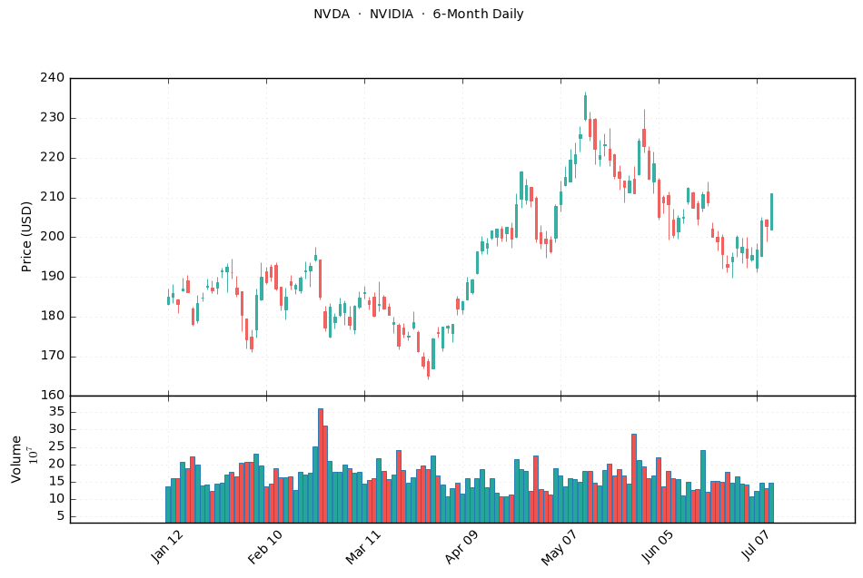
📊 一月日 K（22 交易日）
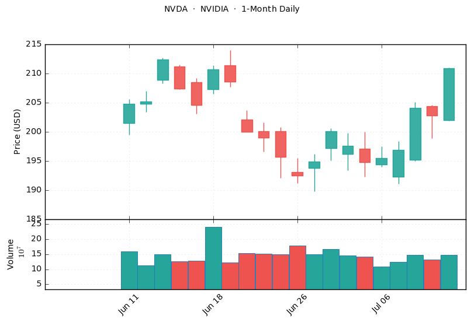
P/E (TTM)32.3
P/E (Fwd)16.5
EPS (TTM)$6.54
EPS (Fwd)$12.79
💡 AI 推薦
NVIDIA 為 AI 運算硬體的絕對領導者，Blackwell 架構 GPU 在訓練與推理市場無可匹敵。CUDA 生態系統壁壘極高，軟體相容性優勢讓競爭對手難以追趕。資料中心業務營收已超越遊戲成為最大支柱，雲端業者資本支出無放緩跡象。自動駕駛（DRIVE）、工業元宇宙（Omniverse）與醫療 AI 布局提供長期成長動能。
📰 最新新聞（3 天內）
- 2026 下半年投資主題：AI 擴散、能源重整、股息成長 — Six investment themes for the second half of 2026
- AI 晶片需求爆發帶動半導體設備廠營收增長 — AI chip demand drives semiconductor equipment revenue growth
- 半導體類股在通膨疑慮緩解後出現反彈 — Beaten-up semiconductors led the market comeback
AMD
AMD
$557.89
+2.04%
💾 AI 晶片/GPU
📊 半年日 K
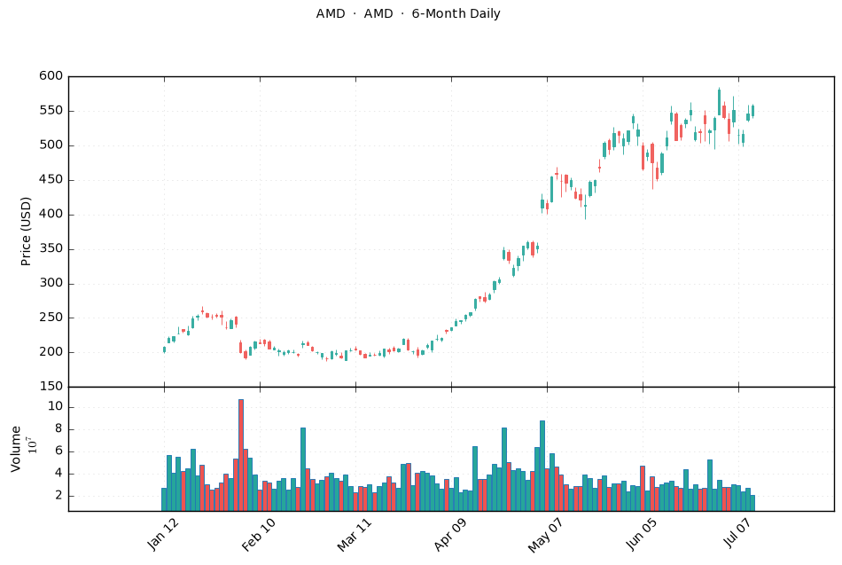
📊 一月日 K（22 交易日）
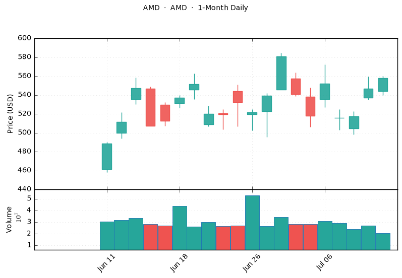
P/E (TTM)185.3
P/E (Fwd)42.0
EPS (TTM)$3.01
EPS (Fwd)$13.28
💡 AI 推薦
AMD 在資料中心 GPU 市場份額持續擴大，MI300X 已進入大規模部署階段，挑戰 NVIDIA 的主導地位。AI 基礎建設的資本支出無減速跡象，AMD 作為替代供應商將持續受惠於供應鏈多元化需求。伺服器處理器業務同樣傳出好消息，市佔率穩步提升。股價經歷修正後本益比已相對合理，具備吸引力。
📰 最新新聞（3 天內）
- 半導體類股在通膨疑慮緩解後出現反彈 — Beaten-up semiconductors led the market comeback
- Vickers 內部人交易追蹤報告 — Vickers Top Buyers & Sellers insider trading report
- The Vickers Top Buyers & Sellers is a daily report that identifies the five companies the largest insider purchase transactions based on the dollar value of the transactions as well as the five companies the largest insider sales transactions based on the dollar value of the transactions. — The Vickers Top Buyers & Sellers is a daily report that identifies the five companies the largest insider purchase transactions based on the dollar value of the transactions as well as the five companies the largest insider sales transactions based on the dollar value of the transactions.
AVGO
Broadcom
$399.97
-0.28%
💾 AI 晶片/GPU
📊 半年日 K
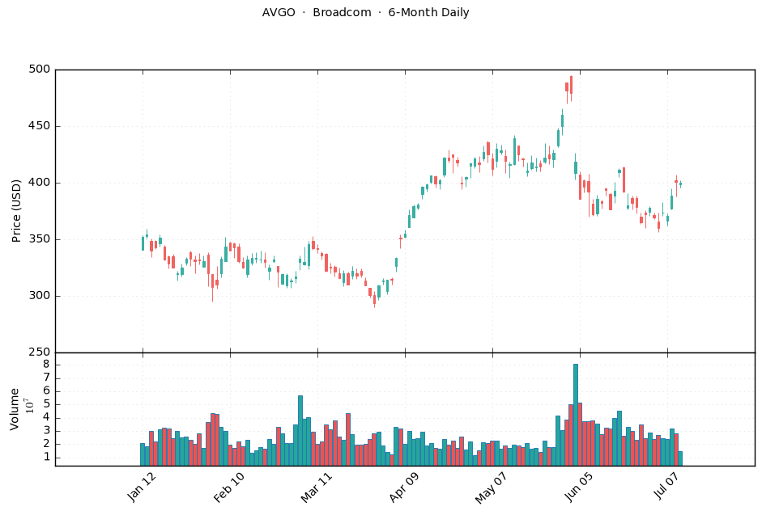
📊 一月日 K（22 交易日）
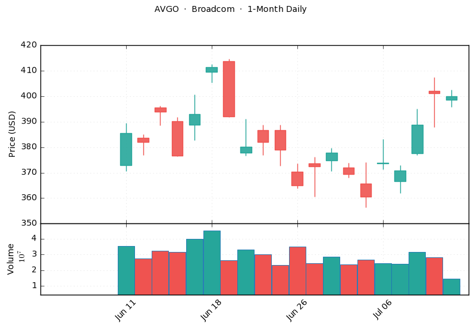
P/E (TTM)66.7
P/E (Fwd)20.6
EPS (TTM)$6.00
EPS (Fwd)$19.40
💡 AI 推薦
Broadcom 為 AI 基礎建設不可或缺的核心供應商，網通晶片、Wi-Fi 與藍牙晶片市佔率領先。旗下 VMware 整合順利，軟體業務規模持續擴大。AI 伺服器需要大量客製化網通晶片，Broadcom 是少數能提供完整解決方案的廠商。財報顯示 AI 相關營收增長加速，成長動能無虞。
📰 最新新聞（3 天內）
- 半導體類股在通膨疑慮緩解後出現反彈 — Beaten-up semiconductors led the market comeback
- 2026 下半年投資主題：AI 擴散、能源重整、股息成長 — Six investment themes for the second half of 2026
- Vickers 內部人交易追蹤報告 — Vickers Top Buyers & Sellers insider trading report
INTC
Intel
$109.84
-2.40%
💾 AI 晶片/GPU
📊 半年日 K
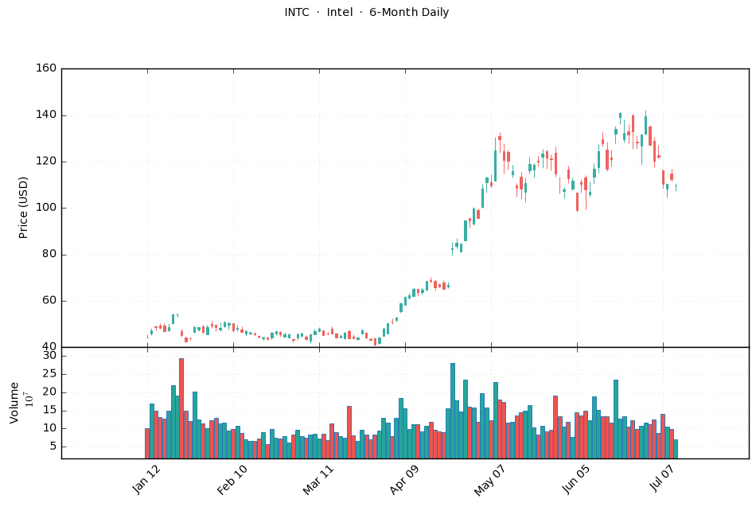
📊 一月日 K（22 交易日）
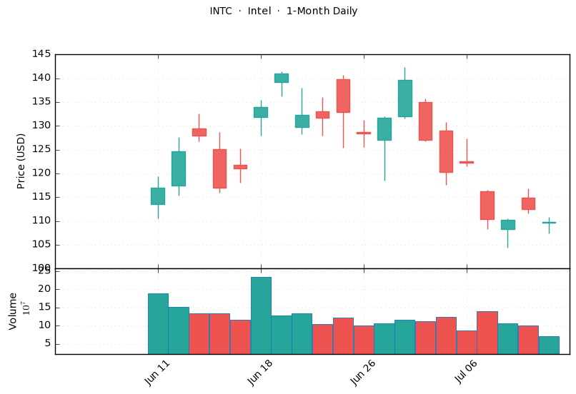
P/E (TTM)—
P/E (Fwd)69.8
EPS (TTM)$-0.60
EPS (Fwd)$1.57
💡 AI 推薦
Intel 正在轉型期，P-Core 與 E-Core 混合架構的 Meteor Lake 已進入放量階段。IDM 2.0 策略持續推進，代工業務 Intel Foundry 獲得美國政府補助支持。然而在 AI GPU 市場仍落後 NVIDIA，資料中心 CPU 市佔率流失為結構性問題。股價已大幅修正，估值處於歷史低檔。
📰 最新新聞（3 天內）
- 機構投資者與 Activist 投資趨勢分析 — Activist investors' 13F filings reveal core holdings
- Intel 為全球半導體晶片與處理器主要供應商 — Intel supplies the computing industry with chips and software
- The Vickers Top Buyers & Sellers is a daily report that identifies the five companies the largest insider purchase transactions based on the dollar value of the transactions as well as the five companies the largest insider sales transactions based on the dollar value of the transactions. — The Vickers Top Buyers & Sellers is a daily report that identifies the five companies the largest insider purchase transactions based on the dollar value of the transactions as well as the five companies the largest insider sales transactions based on the dollar value of the transactions.
QCOM
Qualcomm
$189.16
-1.02%
💾 AI 晶片/GPU
📊 半年日 K

📊 一月日 K（22 交易日）
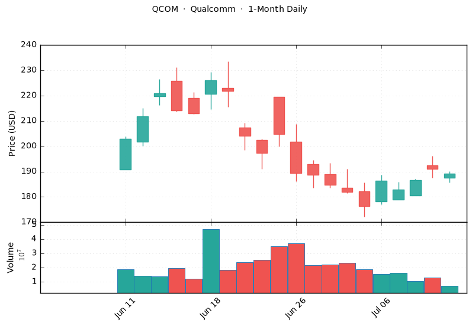
P/E (TTM)20.3
P/E (Fwd)17.2
EPS (TTM)$9.31
EPS (Fwd)$11.01
💡 AI 推薦
Qualcomm 為全球最大行動通訊晶片設計公司，Snapdragon 系列在 Android 高階手機市場佔有率領先。AI PC 晶片（Snapdragon X 系列）正在獲得 OEM 採用，挑戰 Intel 與 AMD 的市場份額。物聯網與汽車ADAS 業務持續擴張。專利授權業務提供穩定現金流。
📰 最新新聞（3 天內）
- AI 晶片需求爆發帶動半導體設備廠營收增長 — AI chip demand drives semiconductor equipment revenue growth
- 半導體類股在通膨疑慮緩解後出現反彈 — Beaten-up semiconductors led the market comeback
- Stocks rose on Thursday, with the S&P 500 up 1.02%, the Dow Jones Industrial Average higher by 1.62%, and the Nasdaq Composite ahead by 0.89%. The bullish mood was driven by earnings reports, an acceptable GDP report, and as the war in Iran seems to be fading in the mind of investors focused on corporate results (at least for now). — Stocks rose on Thursday, with the S&P 500 up 1.02%, the Dow Jones Industrial Average higher by 1.62%, and the Nasdaq Composite ahead by 0.89%. The bullish mood was driven by earnings reports, an acceptable GDP report, and as the war in Iran seems to be fading in the mind of investors focused on corporate results (at least for now).
MRVL
Marvell
$235.81
-3.07%
💾 AI 晶片/GPU
📊 半年日 K

📊 一月日 K（22 交易日）
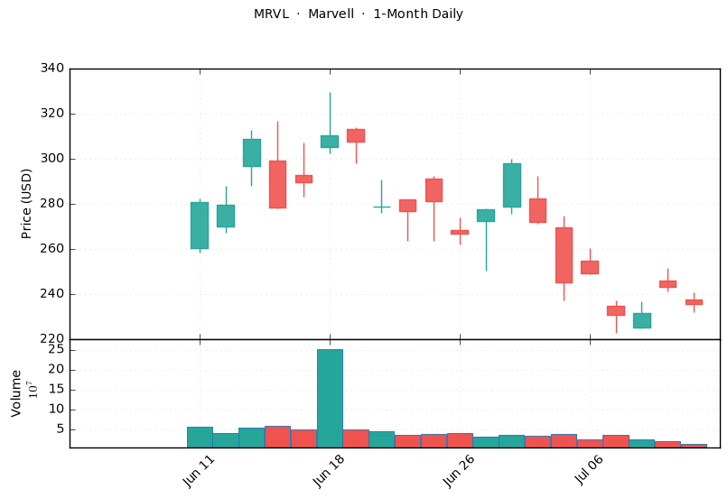
P/E (TTM)81.3
P/E (Fwd)38.2
EPS (TTM)$2.90
EPS (Fwd)$6.18
💡 AI 推薦
Marvell Technology 為資料中心半導體設計公司，AI 網通晶片（PAM4 DSP、Tahoe）需求爆發。雲端客戶對客製化 AI ASIC 的需求增加，Marvell 作為少數具備 5nm 量產能力的廠商直接受惠。營收增長加速，Free Cash Flow 轉正且持續擴大。Pre-Fabric 與光學 DSP 業務具有高度長期成長性。
📰 最新新聞（3 天內）
- 半導體類股在通膨疑慮緩解後出現反彈 — Beaten-up semiconductors led the market comeback
- 2026 下半年投資主題：AI 擴散、能源重整、股息成長 — Six investment themes for the second half of 2026
- The Portfolio Selector features the Argus Focus List, a group of 30 "best idea" stocks generated and regularly updated by Argus' analysts and investment policy committee. It also includes the director of research’s monthly investment strategy column, stock recommendations and sector picks, economic forecasts, and an asset allocation model. This month, the Focus List additions are NVIDIA Corp (NVDA); Applied Materials Inc (AMAT); Maplebear Inc (CART); Lyft Inc (LYFT) and the Focus List deletions are Cisco Systems Inc (CSCO); Expedia Group Inc (EXPE); Meta Platforms Inc (META); Marvell Technology Inc (MRVL). — The Portfolio Selector features the Argus Focus List, a group of 30 "best idea" stocks generated and regularly updated by Argus' analysts and investment policy committee. It also includes the director of research’s monthly investment strategy column, stock recommendations and sector picks, economic forecasts, and an asset allocation model. This month, the Focus List additions are NVIDIA Corp (NVDA); Applied Materials Inc (AMAT); Maplebear Inc (CART); Lyft Inc (LYFT) and the Focus List deletions are Cisco Systems Inc (CSCO); Expedia Group Inc (EXPE); Meta Platforms Inc (META); Marvell Technology Inc (MRVL).
ARM
ARM Holdings
$323.39
-1.37%
💾 AI 晶片/GPU
📊 半年日 K
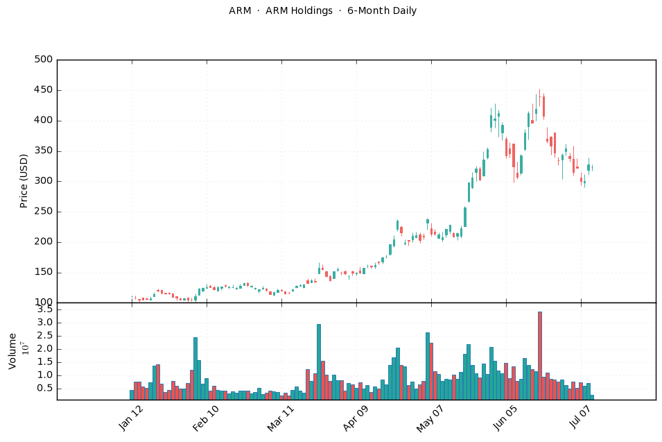
📊 一月日 K（22 交易日）
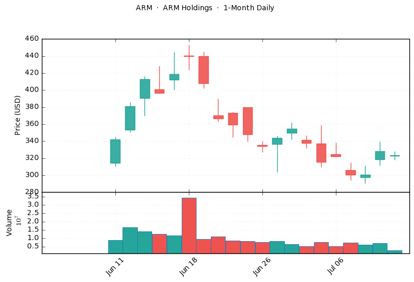
P/E (TTM)385.0
P/E (Fwd)105.0
EPS (TTM)$0.84
EPS (Fwd)$3.08
💡 AI 推薦
ARM 為全球最重要的 IP 授權公司，所有主要處理器架構均基於 ARM 設計。在 AI 時代，ARM 架構在資料中心、行動裝置與 IoT 的滲透率持續擴大。公司的授權模式具有高度規模效應，Royalty 收入隨著出貨量增長而加速。IPO 以來股價表現亮眼，基本面支撐強勁。
📰 最新新聞（3 天內）
- AI 晶片需求爆發帶動半導體設備廠營收增長 — AI chip demand drives semiconductor equipment revenue growth
TSM
TSMC
$434.11
-0.65%
💾 AI 晶片/GPU
📊 半年日 K
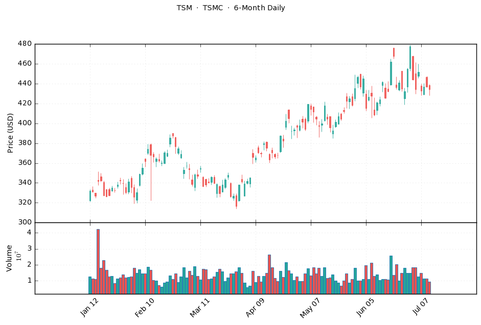
📊 一月日 K（22 交易日）
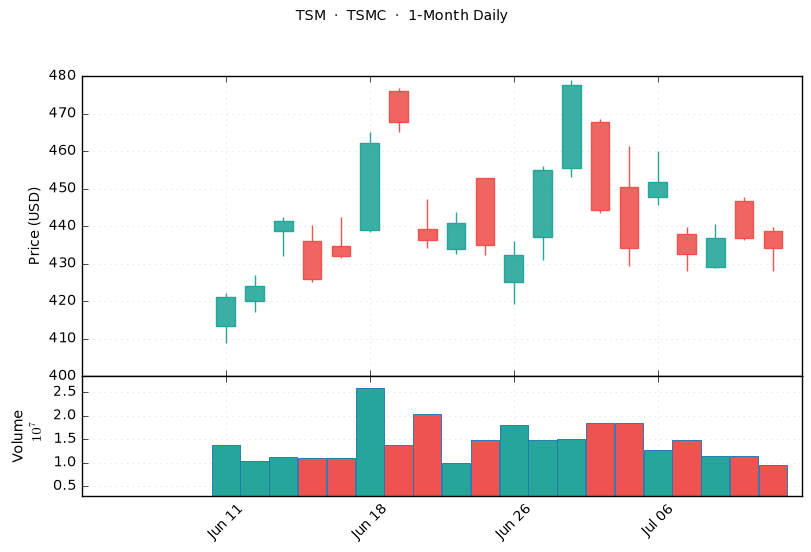
P/E (TTM)37.7
P/E (Fwd)21.4
EPS (TTM)$11.50
EPS (Fwd)$20.29
💡 AI 推薦
— 等待下次報告更新 —
📰 最新新聞（3 天內）
- — 無 3 天內新聞 —
📦 AI 先進封裝/CoWoS (4)
AMAT
Applied Materials
$602.50
+2.35%
📦 AI 先進封裝/CoWoS
📊 半年日 K

📊 一月日 K（22 交易日）
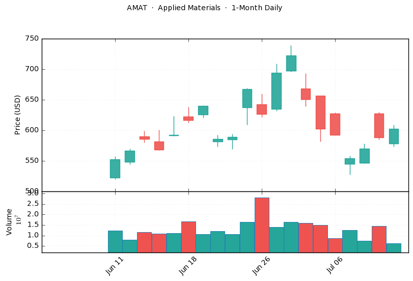
P/E (TTM)56.8
P/E (Fwd)36.2
EPS (TTM)$10.60
EPS (Fwd)$16.66
💡 AI 推薦
AMAT（應用材料）為半導體設備龍頭，受惠於 AI 晶片需求爆發與先進製程資本支出攀升。短期股價修正提供難得進場機會，基本面仍然強勁。半導體設備廠營收增長具有韌性，AMAT 在邏輯晶片與記憶體的佈局完整，能同時受惠於 CoWoS 先進封裝與 HBM 需求。技術面上股價已回測年線支撐，供需缺口持續擴大將推動股價重拾漲勢。
📰 最新新聞（3 天內）
- AI 晶片需求爆發帶動半導體設備廠營收增長 — AI chip demand drives semiconductor equipment revenue growth
- Dividend Growth 投資策略持續受到關注 — Dividend income often overlooked amid stock market gyrations
- The Vickers Top Buyers & Sellers is a daily report that identifies the five companies the largest insider purchase transactions based on the dollar value of the transactions as well as the five companies the largest insider sales transactions based on the dollar value of the transactions. — The Vickers Top Buyers & Sellers is a daily report that identifies the five companies the largest insider purchase transactions based on the dollar value of the transactions as well as the five companies the largest insider sales transactions based on the dollar value of the transactions.
LRCX
Lam Research
$350.33
-0.80%
📦 AI 先進封裝/CoWoS
📊 半年日 K
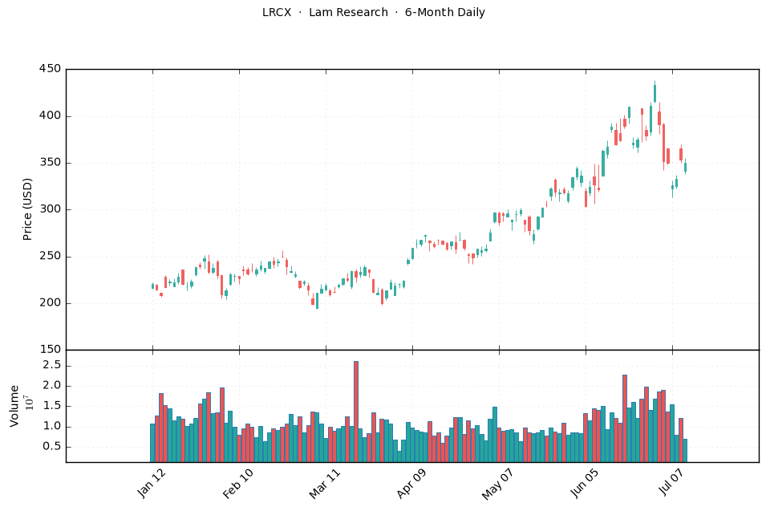
📊 一月日 K（22 交易日）
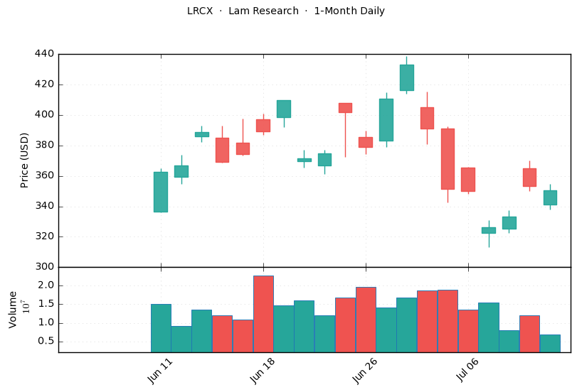
P/E (TTM)66.2
P/E (Fwd)43.3
EPS (TTM)$5.29
EPS (Fwd)$8.08
💡 AI 推薦
— 等待下次報告更新 —
📰 最新新聞（3 天內）
- — 無 3 天內新聞 —
AMKR
Amkor
$70.47
-2.34%
📦 AI 先進封裝/CoWoS
📊 半年日 K
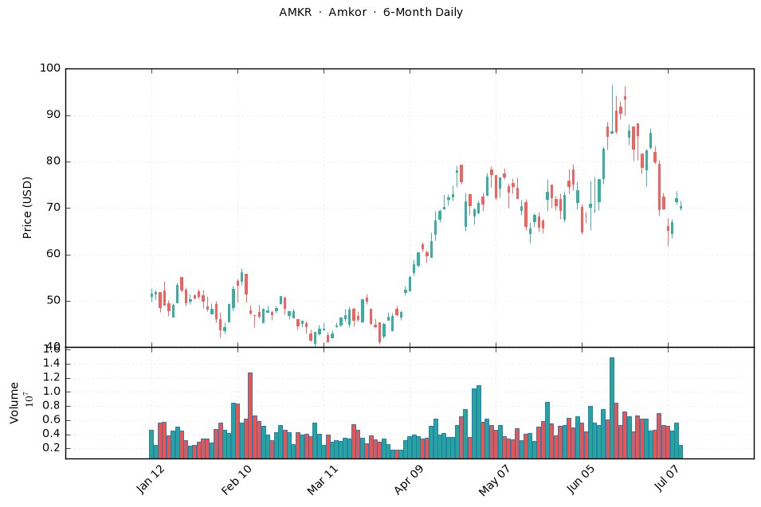
📊 一月日 K（22 交易日）
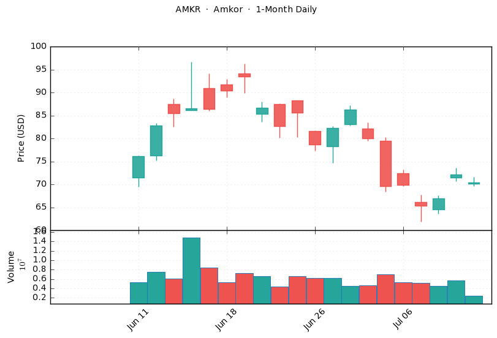
P/E (TTM)40.5
P/E (Fwd)28.7
EPS (TTM)$1.74
EPS (Fwd)$2.45
💡 AI 推薦
AMKR（安靠科技）為全球第二大半導體封測代工廠，在先進封裝趨勢中扮演關鍵角色。CoWoS 與 SoIC 等先進封裝技術需求爆發，安靠作為，台積電 CoWoS 產能不足時的首選替代供應商將直接受惠。IoT 與汽車電子長期需求同樣看好。公司財務體質穩健，殖利率具吸引力。
📰 最新新聞（3 天內）
- AMKOR 投資評級為 HOLD，目標價 $69 — AMKOR TECHNOLOGY INC Investment Rating of HOLD; target price $69
- AMKOR TECHNOLOGY INC has an Investment Rating of HOLD; a target price of $91.000000; an Industry Subrating of High; a Management Subrating of Medium; a Safety Subrating of Medium; a Financial Strength Subrating of Medium; a Growth Subrating of Medium; and a Value Subrating of High. — AMKOR TECHNOLOGY INC has an Investment Rating of HOLD; a target price of $91.000000; an Industry Subrating of High; a Management Subrating of Medium; a Safety Subrating of Medium; a Financial Strength Subrating of Medium; a Growth Subrating of Medium; and a Value Subrating of High.
- AMKOR TECHNOLOGY INC has an Investment Rating of HOLD; a target price of $91.000000; an Industry Subrating of High; a Management Subrating of Medium; a Safety Subrating of Medium; a Financial Strength Subrating of Medium; a Growth Subrating of Medium; and a Value Subrating of High. — AMKOR TECHNOLOGY INC has an Investment Rating of HOLD; a target price of $91.000000; an Industry Subrating of High; a Management Subrating of Medium; a Safety Subrating of Medium; a Financial Strength Subrating of Medium; a Growth Subrating of Medium; and a Value Subrating of High.
ASX
ASE Tech
$42.66
-1.36%
📦 AI 先進封裝/CoWoS
📊 半年日 K
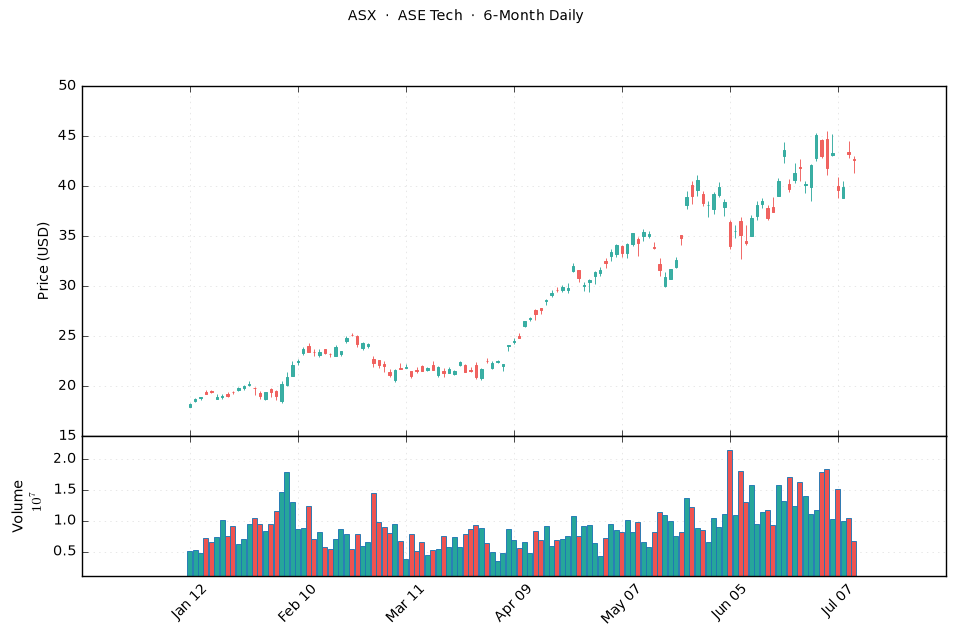
📊 一月日 K（22 交易日）
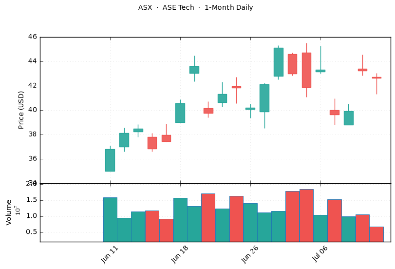
P/E (TTM)66.7
P/E (Fwd)21.4
EPS (TTM)$0.64
EPS (Fwd)$1.99
💡 AI 推薦
ASE 技術控股為全球最大半導體封裝測試代工廠，在先進封裝趨勢中具有重要地位。公司持續擴充 CoWoS 與 SiP 產能，受惠於 AI 晶片封裝需求。汽車與工業應用貢獻穩定營收，但整體增長仍高度依賴消費性電子景氣。股價處於相對低點，已反映部分景氣疑慮。
📰 最新新聞（3 天內）
- — 無 3 天內新聞 —
💾 AI 儲存/記憶體 (5)
MU
Micron
$979.30
-1.24%
💾 AI 儲存/記憶體
📊 半年日 K
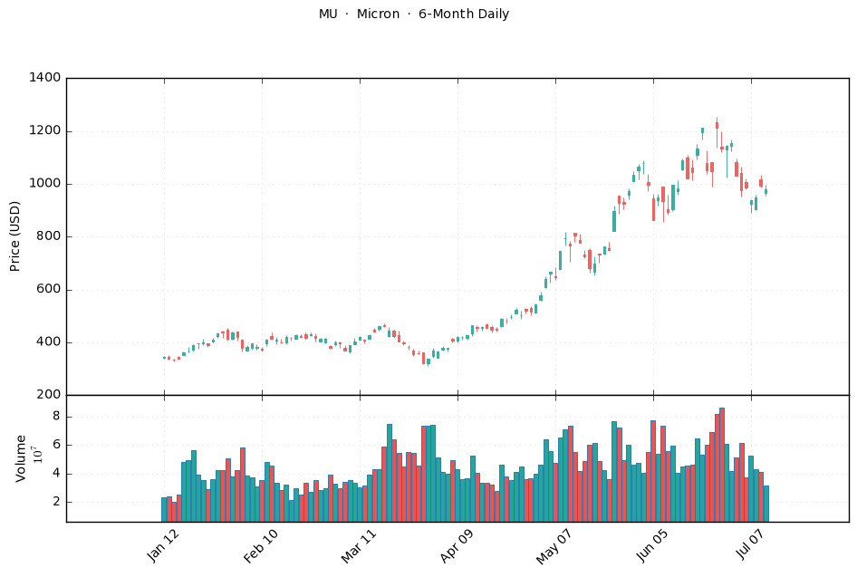
📊 一月日 K（22 交易日）
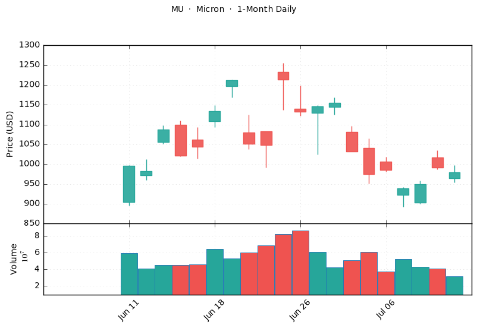
P/E (TTM)22.1
P/E (Fwd)6.5
EPS (TTM)$44.26
EPS (Fwd)$149.64
💡 AI 推薦
Micron Technology 為全球第三大記憶體晶片廠，HBM 需求受 AI 伺服器爆發推動。HBM4 研發進度順利，三大雲端客戶（NVIDIA、AMD、Coffinilus）長約供貨協議鎖定未來營收。資料中心 DRAM 與 NAND 需求同步回升，智慧型手機庫存回補同樣帶動行動記憶體需求。公司在 HBM 市場的份額正在追趕 SK Hynix。
📰 最新新聞（3 天內）
- AI 晶片需求爆發帶動半導體設備廠營收增長 — AI chip demand drives semiconductor equipment revenue growth
- 半導體類股在通膨疑慮緩解後出現反彈 — Beaten-up semiconductors led the market comeback
- The Vickers Top Buyers & Sellers is a daily report that identifies the five companies the largest insider purchase transactions based on the dollar value of the transactions as well as the five companies the largest insider sales transactions based on the dollar value of the transactions. — The Vickers Top Buyers & Sellers is a daily report that identifies the five companies the largest insider purchase transactions based on the dollar value of the transactions as well as the five companies the largest insider sales transactions based on the dollar value of the transactions.
WDC
Western Digital
$582.59
+0.78%
💾 AI 儲存/記憶體
📊 半年日 K
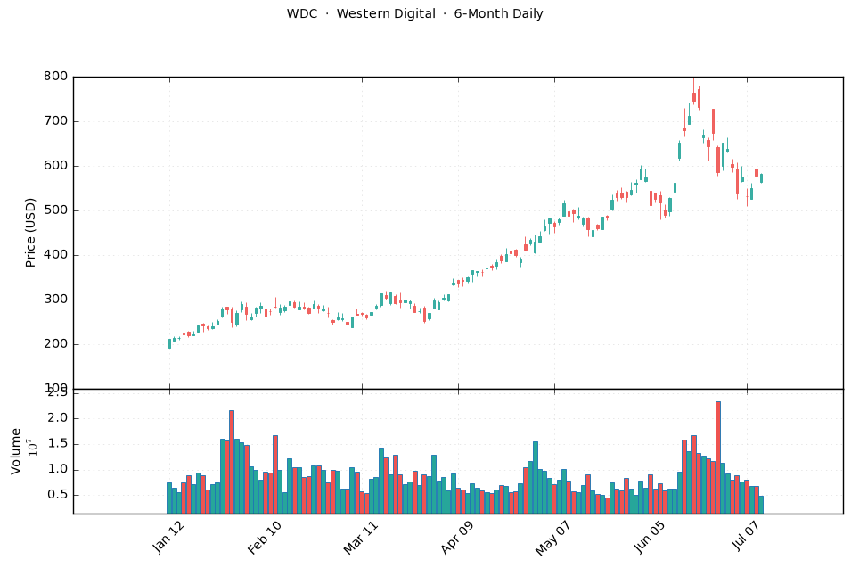
📊 一月日 K（22 交易日）
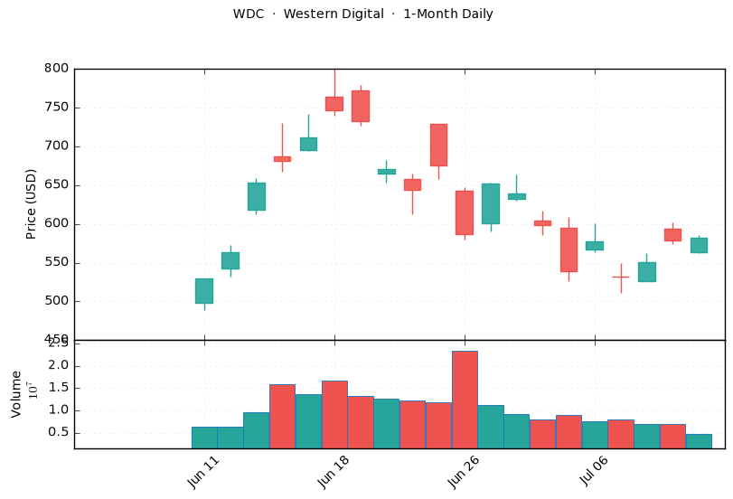
P/E (TTM)34.8
P/E (Fwd)31.6
EPS (TTM)$16.72
EPS (Fwd)$18.46
💡 AI 推薦
Western Digital 為全球最大硬碟與 NAND Flash 儲存製造商之一，AI 時代對資料儲存容量需求爆發直接帶動公司營收。企業級 HDD 在資料中心需求回升，NAND 與 DRAM 在智慧型手機與 PC 市場庫存回補。與 Kioxia 的合併談判若完成將改變 NAND 市場格局。
📰 最新新聞（3 天內）
- AI 時代的資料儲存需求分析 — Data storage needs in the AI era
- Argus Research has a long history as a leading fundamental research provider, but our analysts and strategists -- as well as our clients -- also value the investment signals generated from a technical perspective. This daily Market Movers report is our primary technical thought-leadership vehicle, and here are some of the key tenets behind our technical analytical approach. — Argus Research has a long history as a leading fundamental research provider, but our analysts and strategists -- as well as our clients -- also value the investment signals generated from a technical perspective. This daily Market Movers report is our primary technical thought-leadership vehicle, and here are some of the key tenets behind our technical analytical approach.
- The flood of earnings reports continues this week, with about 1,500 public companies reporting results for their last quarter. The April jobs report also will come out. Last week, the Dow Jones Industrial Average gained 0.5%, while the S&P 500 and the Nasdaq both rose 1%. Year to date, all three indices are in positive territory, with the DJIA up 3%, the S&P 500 higher by 6%, and the Nasdaq up by 8%. On the earnings calendar, highlights for the week include Palantir on Monday; AMD, Shopify, Arista Networks, Pfizer, and Anheuser-Busch on Tuesday; Walt Disney, Marriott, Uber, CVS Health, DoorDash, and Warner Bros. Discovery on Wednesday; McDonald's, Airbnb, Shell, and Cloudflare on Thursday; and Toyota on Friday. On the economic calendar, new data is pending on the labor market. Job Openings and New Home Sales will be reported on Tuesday; private payrolls report data from ADP on Wednesday; and the April Nonfarm Payrolls report on Friday. Turning to economic data, gas prices remain elevated and rose eight cents last week, hitting an average of $4.12 per gallon for regular gas. The Atlanta Fed GDPNow forecasts calls for GDP growth of 3.5% in the first quarter, up from the 1.2% forecast given just last week. The Cleveland Fed Inflation Nowcast calls for CPI of 3.6% in April and 3.9% in May. The CPI print was 3.3% in March. Mortgage rates moved higher last week, up seven basis points, with the average 30-year fixed-rate mortgage now at 6.30%, according to FreddieMac. The next Federal Open Market Committee (FOMC) meeting is on June 17, with odds at 7% for a rate cut. President Trump's nominee to be the next Fed chairman, Kevin Warsh, has been voted through on the Senate side. The next step is to be confirmed by the House of Representatives. Jerome Powell's term as chairman expires on May 15, but he will remain on the FOMC as a governor. Taking a deeper dive into performance so far in 2026, a leading industrialized global stock market index, the ETF EFA, is up 6% year to date, and the leading emerging market ETF (EEM) is up 17% year to date. U.S. growth stocks are up 1% year to date based on the IWF ETF, while value stocks (IWD) are up 9%. Crude oil prices continue to be volatile. On Friday, oil was at $103 per barrel, up 77% year to date. In other asset classes, AGG bonds are down 1%, gold is up 6%, and Bitcoin is down 11%. The U.S. dollar is flat, tracking DXY. The VIX Volatility Index was at about 17 on Friday, below its historical average of 20. Turning to sector performance, the list from first to worst so far in 2026, as of April 24, is Energy (+31%), Materials (+13%), Industrials (+12%), Consumer Staples (+11%), Real Estate (+11%), Utilities (+10%), Communication Services (+10%), Information Technology (+8%), Consumer Discretionary (+3%), Financials (-4%), and Healthcare (-6%). By comparison, the S&P 500 is up 6% year to date. — The flood of earnings reports continues this week, with about 1,500 public companies reporting results for their last quarter. The April jobs report also will come out. Last week, the Dow Jones Industrial Average gained 0.5%, while the S&P 500 and the Nasdaq both rose 1%. Year to date, all three indices are in positive territory, with the DJIA up 3%, the S&P 500 higher by 6%, and the Nasdaq up by 8%. On the earnings calendar, highlights for the week include Palantir on Monday; AMD, Shopify, Arista Networks, Pfizer, and Anheuser-Busch on Tuesday; Walt Disney, Marriott, Uber, CVS Health, DoorDash, and Warner Bros. Discovery on Wednesday; McDonald's, Airbnb, Shell, and Cloudflare on Thursday; and Toyota on Friday. On the economic calendar, new data is pending on the labor market. Job Openings and New Home Sales will be reported on Tuesday; private payrolls report data from ADP on Wednesday; and the April Nonfarm Payrolls report on Friday. Turning to economic data, gas prices remain elevated and rose eight cents last week, hitting an average of $4.12 per gallon for regular gas. The Atlanta Fed GDPNow forecasts calls for GDP growth of 3.5% in the first quarter, up from the 1.2% forecast given just last week. The Cleveland Fed Inflation Nowcast calls for CPI of 3.6% in April and 3.9% in May. The CPI print was 3.3% in March. Mortgage rates moved higher last week, up seven basis points, with the average 30-year fixed-rate mortgage now at 6.30%, according to FreddieMac. The next Federal Open Market Committee (FOMC) meeting is on June 17, with odds at 7% for a rate cut. President Trump's nominee to be the next Fed chairman, Kevin Warsh, has been voted through on the Senate side. The next step is to be confirmed by the House of Representatives. Jerome Powell's term as chairman expires on May 15, but he will remain on the FOMC as a governor. Taking a deeper dive into performance so far in 2026, a leading industrialized global stock market index, the ETF EFA, is up 6% year to date, and the leading emerging market ETF (EEM) is up 17% year to date. U.S. growth stocks are up 1% year to date based on the IWF ETF, while value stocks (IWD) are up 9%. Crude oil prices continue to be volatile. On Friday, oil was at $103 per barrel, up 77% year to date. In other asset classes, AGG bonds are down 1%, gold is up 6%, and Bitcoin is down 11%. The U.S. dollar is flat, tracking DXY. The VIX Volatility Index was at about 17 on Friday, below its historical average of 20. Turning to sector performance, the list from first to worst so far in 2026, as of April 24, is Energy (+31%), Materials (+13%), Industrials (+12%), Consumer Staples (+11%), Real Estate (+11%), Utilities (+10%), Communication Services (+10%), Information Technology (+8%), Consumer Discretionary (+3%), Financials (-4%), and Healthcare (-6%). By comparison, the S&P 500 is up 6% year to date.
STX
Seagate
$910.34
+2.28%
💾 AI 儲存/記憶體
📊 半年日 K
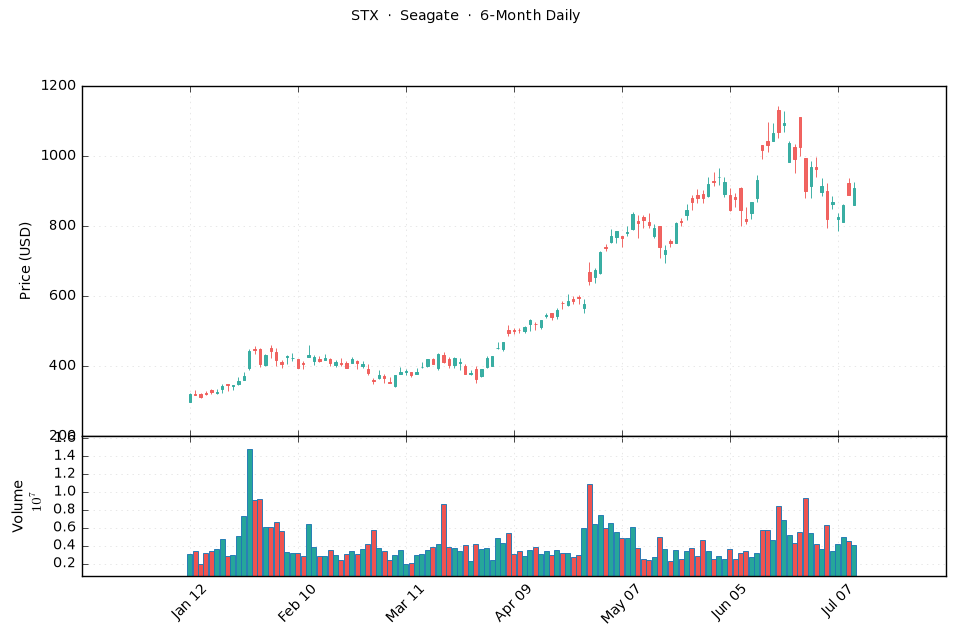
📊 一月日 K（22 交易日）
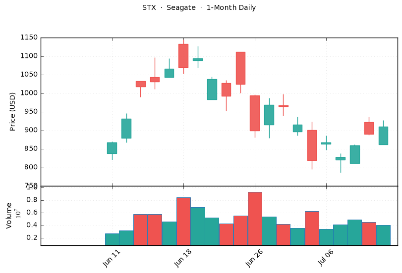
P/E (TTM)86.2
P/E (Fwd)32.9
EPS (TTM)$10.56
EPS (Fwd)$27.67
💡 AI 推薦
— 等待下次報告更新 —
📰 最新新聞（3 天內）
- — 無 3 天內新聞 —
NTAP
NetApp
$168.87
-1.67%
💾 AI 儲存/記憶體
📊 半年日 K
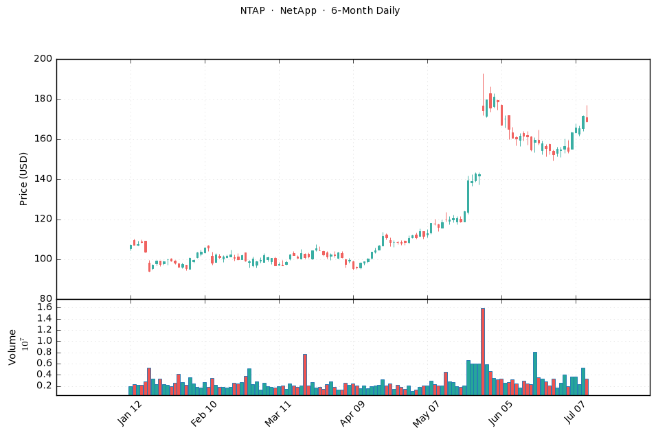
📊 一月日 K（22 交易日）
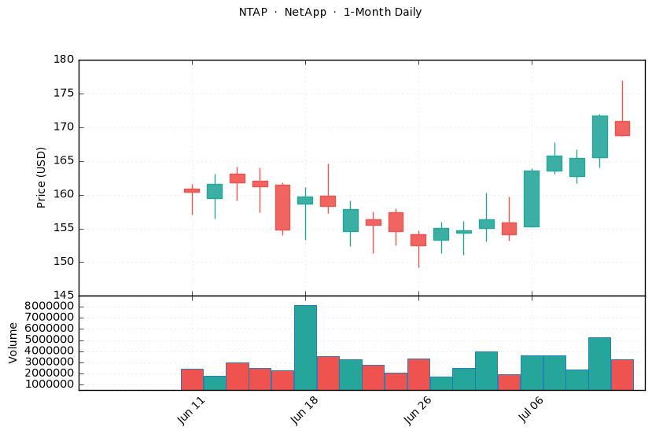
P/E (TTM)26.6
P/E (Fwd)17.2
EPS (TTM)$6.35
EPS (Fwd)$9.84
💡 AI 推薦
NetApp 為企業資料儲存與管理龍頭，在混合雲儲存市場具有領先地位。AI 訓練與推理需要大量高速儲存，NetApp 的 AFF 系統直接受惠。 ONTAP 軟體訂閱制轉型順利，毛利率持續提升。雲端資料服務（BlueXP）滲透率上升，開闢新營收來源。
📰 最新新聞（3 天內）
- AI 時代的資料管理與儲存需求分析 — Data management and storage needs in the AI era
- NetApp Inc. is a pure-play data storage company, providing enterprise network storage and data management solutions, including storage hardware, software, and services. NTAP has a major converged-infrastructure partner in Cisco Systems Inc. and key data center partners, including Microsoft, Alphabet Inc.'s Google, and Amazon.com Inc.'s Amazon Web Services. — NetApp Inc. is a pure-play data storage company, providing enterprise network storage and data management solutions, including storage hardware, software, and services. NTAP has a major converged-infrastructure partner in Cisco Systems Inc. and key data center partners, including Microsoft, Alphabet Inc.'s Google, and Amazon.com Inc.'s Amazon Web Services.
- The May jobs report comes out this week, as do a few late earnings reports from some big tech and retail names. Last week, the Dow Jones Industrial Average rose 1%, the S&P 500 was up 1.4%, and the Nasdaq popped 2%. Year to date, all three indices are in positive territory, with the DJIA up 6%, the S&P 500 higher by 11%, and the Nasdaq ahead by 16%. On the earnings calendar, highlights this week include Hewlett Packard Enterprise on Monday; Palo Alto Networks, Dollar General, and Ulta Beauty on Tuesday; Broadcom, CrowdStrike, and Medtronic on Wednesday; and Ciena and Lululemon on Thursday. About 96% of S&P 500 companies have reported so far, and overall earnings are up 29% over last quarter. Information Technology, up 56%, and Communication Services, up 51%, are leading the pack. At the bottom are Healthcare, down 3%, and Energy, down 1%, according to LSEG I/B/E/S. On the economic calendar, ISM Manufacturing and Construction Spending are due out on Monday; the Job Openings and Labor Turnover Survey (JOLTS) report on Tuesday; ADP's private payrolls report on Wednesday; and the May Employment Situation report on Friday. Turning to economic data, gas prices remain elevated but dropped a penny last week, with the average price for a gallon of regular gas now at $4.48. The Atlanta Fed GDPNow forecasts GDP growth of 3.8% for 2Q, compared to the 1.6% actual in 1Q. The Cleveland Fed Inflation Nowcast calls for CPI of 4.2% for May, a step-up from the 3.8% print in April and 3.3% in March. Mortgage rates inched up another two basis points last week, with the average 30-year fixed-rate mortgage now at 6.53%, according to FreddieMac. The next Federal Open Market Committee (FOMC) meeting is on June 17, and will be the first under the chairmanship of Kevin Warsh. Odds are at 0% for a rate move at that meeting. Taking a deeper dive into performance so far in 2026, a leading industrialized global stock market index, the ETF EFA, is up 9% year to date. The leading emerging market ETF (EEM) is up 25% year to date. U.S. growth stocks are up 7% looking at ETF IWF, while value stocks (IWD) are up 12%. Crude oil prices continue to be volatile. On Friday, oil was much lower at $87 per barrel, but still up 51% for the year to date. In other asset classes for the year to date, AGG bonds are down 1%, gold is up 5%, and Bitcoin is down 16%. The U.S. dollar is up 1%, tracking DXY. The VIX Volatility Index was about 15 on Friday, well below its historical average of 20. Turning to sector performance, the year-to-date list from first to worst as of May 22, is Energy (+32%), Information Technology (+18%), Communication Services (+9%), Industrials (+11%), Real Estate (+11%), Consumer Staples (+10%), Materials (+10%), Utilities (+6%), Consumer Discretionary (+2%), Financials (-5%), and Healthcare (-3%). — The May jobs report comes out this week, as do a few late earnings reports from some big tech and retail names. Last week, the Dow Jones Industrial Average rose 1%, the S&P 500 was up 1.4%, and the Nasdaq popped 2%. Year to date, all three indices are in positive territory, with the DJIA up 6%, the S&P 500 higher by 11%, and the Nasdaq ahead by 16%. On the earnings calendar, highlights this week include Hewlett Packard Enterprise on Monday; Palo Alto Networks, Dollar General, and Ulta Beauty on Tuesday; Broadcom, CrowdStrike, and Medtronic on Wednesday; and Ciena and Lululemon on Thursday. About 96% of S&P 500 companies have reported so far, and overall earnings are up 29% over last quarter. Information Technology, up 56%, and Communication Services, up 51%, are leading the pack. At the bottom are Healthcare, down 3%, and Energy, down 1%, according to LSEG I/B/E/S. On the economic calendar, ISM Manufacturing and Construction Spending are due out on Monday; the Job Openings and Labor Turnover Survey (JOLTS) report on Tuesday; ADP's private payrolls report on Wednesday; and the May Employment Situation report on Friday. Turning to economic data, gas prices remain elevated but dropped a penny last week, with the average price for a gallon of regular gas now at $4.48. The Atlanta Fed GDPNow forecasts GDP growth of 3.8% for 2Q, compared to the 1.6% actual in 1Q. The Cleveland Fed Inflation Nowcast calls for CPI of 4.2% for May, a step-up from the 3.8% print in April and 3.3% in March. Mortgage rates inched up another two basis points last week, with the average 30-year fixed-rate mortgage now at 6.53%, according to FreddieMac. The next Federal Open Market Committee (FOMC) meeting is on June 17, and will be the first under the chairmanship of Kevin Warsh. Odds are at 0% for a rate move at that meeting. Taking a deeper dive into performance so far in 2026, a leading industrialized global stock market index, the ETF EFA, is up 9% year to date. The leading emerging market ETF (EEM) is up 25% year to date. U.S. growth stocks are up 7% looking at ETF IWF, while value stocks (IWD) are up 12%. Crude oil prices continue to be volatile. On Friday, oil was much lower at $87 per barrel, but still up 51% for the year to date. In other asset classes for the year to date, AGG bonds are down 1%, gold is up 5%, and Bitcoin is down 16%. The U.S. dollar is up 1%, tracking DXY. The VIX Volatility Index was about 15 on Friday, well below its historical average of 20. Turning to sector performance, the year-to-date list from first to worst as of May 22, is Energy (+32%), Information Technology (+18%), Communication Services (+9%), Industrials (+11%), Real Estate (+11%), Consumer Staples (+10%), Materials (+10%), Utilities (+6%), Consumer Discretionary (+2%), Financials (-5%), and Healthcare (-3%).
P
Everpure
$79.33
-2.01%
💾 AI 儲存/記憶體
📊 半年日 K
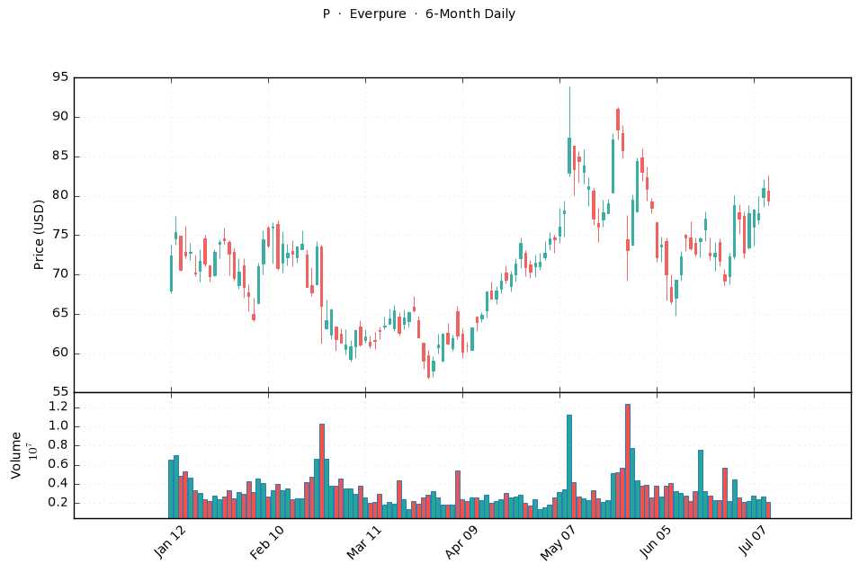
📊 一月日 K（22 交易日）
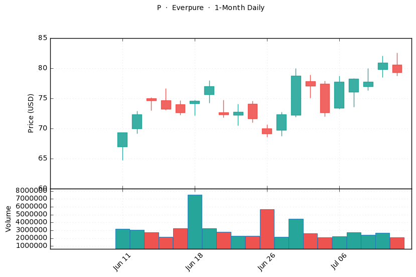
P/E (TTM)120.2
P/E (Fwd)26.4
EPS (TTM)$0.66
EPS (Fwd)$3.01
💡 AI 推薦
— 等待下次報告更新 —
📰 最新新聞（3 天內）
- — 無 3 天內新聞 —
🧊 AI 散熱/液冷 (2)
VRT
Vertiv
$318.86
-1.56%
🧊 AI 散熱/液冷
📊 半年日 K
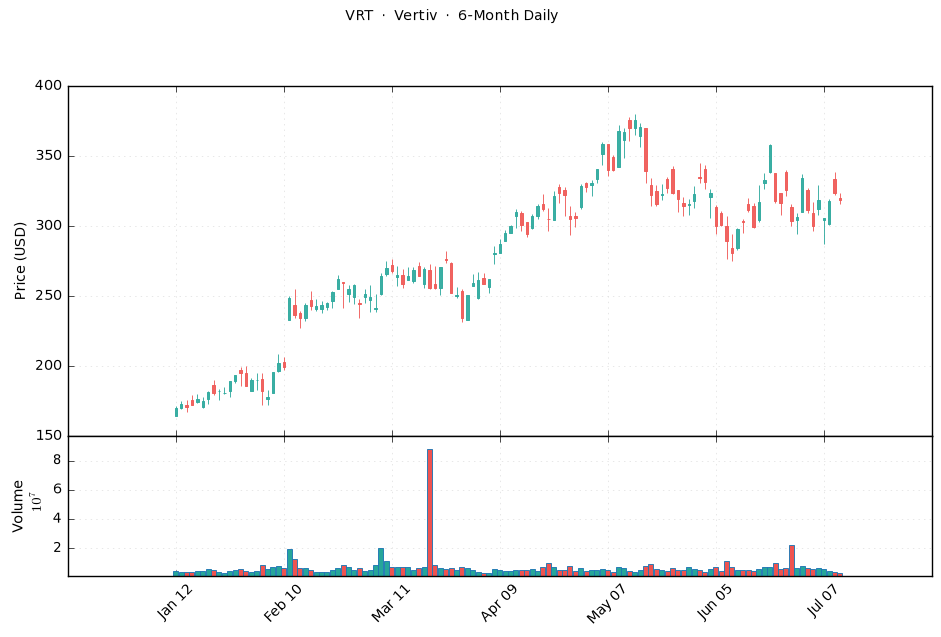
📊 一月日 K（22 交易日）
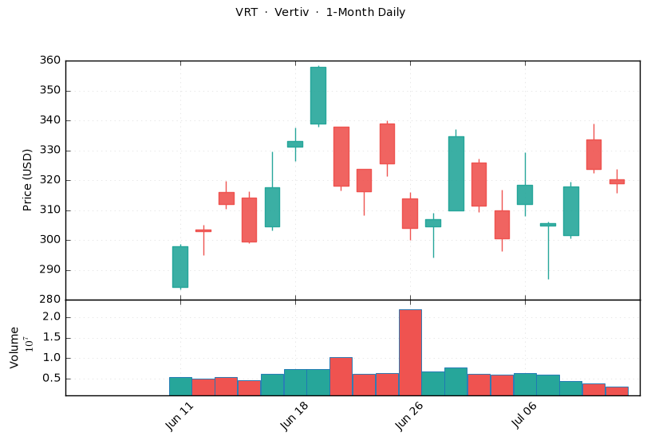
P/E (TTM)79.9
P/E (Fwd)36.0
EPS (TTM)$3.99
EPS (Fwd)$8.86
💡 AI 推薦
Vertiv Holdings 為資料中心基礎設施解決方案龍頭，散熱、電力與配電系統市佔率全球第一。AI 伺服器功率密度飆升創造對液冷技術的爆發性需求，Vertiv 的 Liebert 液冷產品線直接受惠。預製模組化資料中心（Prefabricated Modular）交付快速，獲得雲端與電信客戶青睞。
📰 最新新聞（3 天內）
- AI 時代的資料中心基礎設施需求分析 — Data center infrastructure needs in the AI era
- 半導體類股在通膨疑慮緩解後出現反彈 — Beaten-up semiconductors led the market comeback
- Vertiv Holdings Co has an Investment Rating of BUY; a target price of $363.000000; an Industry Subrating of High; a Management Subrating of High; a Safety Subrating of High; a Financial Strength Subrating of High; a Growth Subrating of High; and a Value Subrating of High. — Vertiv Holdings Co has an Investment Rating of BUY; a target price of $363.000000; an Industry Subrating of High; a Management Subrating of High; a Safety Subrating of High; a Financial Strength Subrating of High; a Growth Subrating of High; and a Value Subrating of High.
SPXC
SPXC
$219.87
+1.50%
🧊 AI 散熱/液冷
📊 半年日 K
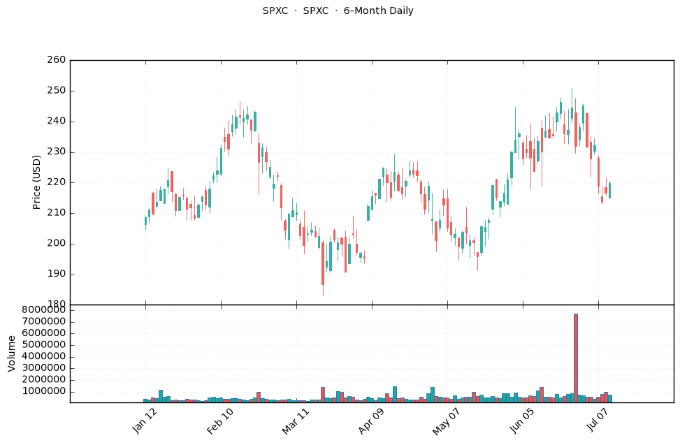
📊 一月日 K（22 交易日）
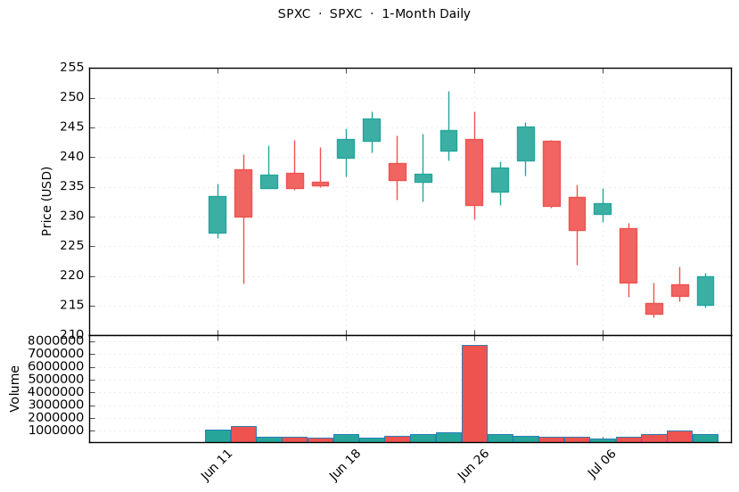
P/E (TTM)42.0
P/E (Fwd)24.2
EPS (TTM)$5.23
EPS (Fwd)$9.09
💡 AI 推薦
SPX Technologies 為工業軸承與配件龍頭，在風力發電與航空市場具有重要地位。風力發電機軸承需求受惠於全球再生能源建設熱潮，營收增長具有韌性。航空業務（APU 與結構件）逐步復甦，商用飛機交付量回升。公司的寡占市場地位提供定價能力。
📰 最新新聞（3 天內）
- 工業類股正在協助 AI 發展，同時也受惠於 AI — AI helping Industrial sector companies while they support AI growth
- Lowering target price to $255.00 — Lowering target price to $255.00
- Raising target price to $258.00 — Raising target price to $258.00
⚡ AI 電力/能源 (9)
VST
Vistra
$158.86
+0.56%
⚡ AI 電力/能源
📊 半年日 K

📊 一月日 K（22 交易日）

P/E (TTM)26.6
P/E (Fwd)14.7
EPS (TTM)$5.97
EPS (Fwd)$10.81
💡 AI 推薦
Vistra 為美國主要發電與零售能源供應商，在德州電力市場具有重要地位。公司擁有天然氣電廠與再生能源資產組合，提供穩定與清潔混合能源。Vistra 的數位化能源管理系統提升電廠調度效率。零售能源客戶基礎龐大，長期合約鎖定營收。
📰 最新新聞（3 天內）
- Dividend Growth 投資策略持續受到關注 — Dividend income often overlooked amid stock market gyrations
- 永續影響力投資持續獲得青睞 — Sustainable Impact Investing gaining traction globally
- VISTRA CORP has an Investment Rating of HOLD; a target price of $148.000000; an Industry Subrating of Medium; a Management Subrating of Medium; a Safety Subrating of High; a Financial Strength Subrating of High; a Growth Subrating of Medium; and a Value Subrating of Medium. — VISTRA CORP has an Investment Rating of HOLD; a target price of $148.000000; an Industry Subrating of Medium; a Management Subrating of Medium; a Safety Subrating of High; a Financial Strength Subrating of High; a Growth Subrating of Medium; and a Value Subrating of Medium.
CEG
Constellation
$251.38
+0.26%
⚡ AI 電力/能源
📊 半年日 K

📊 一月日 K（22 交易日）
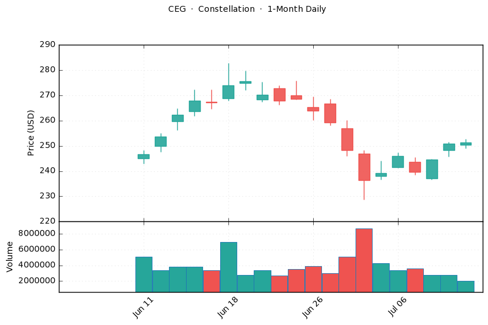
P/E (TTM)21.8
P/E (Fwd)18.5
EPS (TTM)$11.51
EPS (Fwd)$13.58
💡 AI 推薦
Constellation Energy 為美國最大碳中和能源供應商，核能資產組合堅實。在全球能源轉型與 AI 資料中心用電需求爆發的背景下，清潔能源供應商具有戰略價值。核能作為基載電源，在資料中心優先供電協議中佔優勢。電廠擴張與長期供電合約將支撐營收穩定增長。
📰 最新新聞（3 天內）
- Constellation Energy 為全美最大碳中和能源生產商 — Constellation Energy is the nation's largest producer of carbon-free energy
- Dividend Growth 投資策略持續受到關注 — Dividend income often overlooked amid stock market gyrations
- The major indices are lower at midday Tuesday, with the Nasdaq down more than 1%. Inflation is rising faster than expected. Headline CPI came in at 3.8% for April, in line with consensus but well above the 3.3% pace the month before. Core CPI was 2.8% for April, above the 2.7% forecast and 2.6% rate the month before. Crude oil is at back up and is now at $102 per barrel. — The major indices are lower at midday Tuesday, with the Nasdaq down more than 1%. Inflation is rising faster than expected. Headline CPI came in at 3.8% for April, in line with consensus but well above the 3.3% pace the month before. Core CPI was 2.8% for April, above the 2.7% forecast and 2.6% rate the month before. Crude oil is at back up and is now at $102 per barrel.
ETN
Eaton
$407.28
+0.36%
⚡ AI 電力/能源
📊 半年日 K

📊 一月日 K（22 交易日）
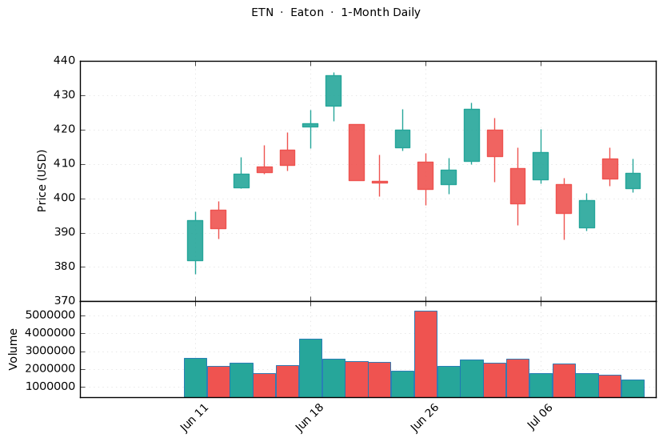
P/E (TTM)39.9
P/E (Fwd)25.8
EPS (TTM)$10.22
EPS (Fwd)$15.78
💡 AI 推薦
Eaton 為電氣設備與液壓系統龍頭，深度受惠於資料中心建設熱潮。公司的電氣元件、配電設備與 UPS 系統是 AI 資料中心的關鍵基礎建設。營收增長具韌性，工業自動化與電動車充電基礎建設提供額外成長引擎。管理層財測持續超標，基本面穩健。
📰 最新新聞（3 天內）
- PCE 通膨指標顯示物價壓力持續，聯準會降息預期推遲 — PCE Price Index shows inflation rising, Fed rate cuts delayed
- 永續影響力投資持續獲得青睞 — Sustainable Impact Investing gaining traction globally
- Sustainable Impact Investing is gaining traction not only with Argus Research clients but also with the global investment community. As assets have flowed in over the past 40 years, Sustainable Investing has evolved. The discipline, originally known as Socially Responsible Investing, first focused on excluding companies that conducted business in South Africa, or participated in industries such as tobacco, alcohol, and firearms. In time, the list of industries to avoid increased to include soft drinks, fast food, and oil and gas, among numerous others. Performance of initial strategies lagged, and the approach has been modified. Now, instead of merely identifying industries to avoid, the discipline promotes "sustainable" business practices across all industries that can have an "impact" on global issues such as climate, hunger, poverty, disease, shelter, and workers' rights. Given the strategy's focus on leading management practices, we expect the growth curve for Sustainable Investing to again slope upward in the years ahead. — Sustainable Impact Investing is gaining traction not only with Argus Research clients but also with the global investment community. As assets have flowed in over the past 40 years, Sustainable Investing has evolved. The discipline, originally known as Socially Responsible Investing, first focused on excluding companies that conducted business in South Africa, or participated in industries such as tobacco, alcohol, and firearms. In time, the list of industries to avoid increased to include soft drinks, fast food, and oil and gas, among numerous others. Performance of initial strategies lagged, and the approach has been modified. Now, instead of merely identifying industries to avoid, the discipline promotes "sustainable" business practices across all industries that can have an "impact" on global issues such as climate, hunger, poverty, disease, shelter, and workers' rights. Given the strategy's focus on leading management practices, we expect the growth curve for Sustainable Investing to again slope upward in the years ahead.
NRG
NRG Energy
$140.42
-0.04%
⚡ AI 電力/能源
📊 半年日 K
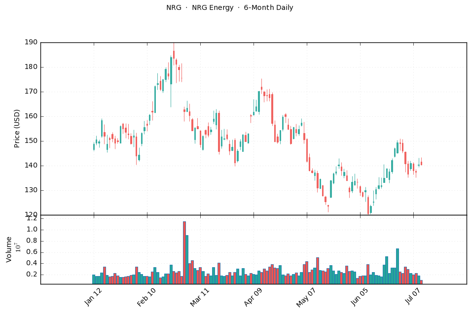
📊 一月日 K（22 交易日）
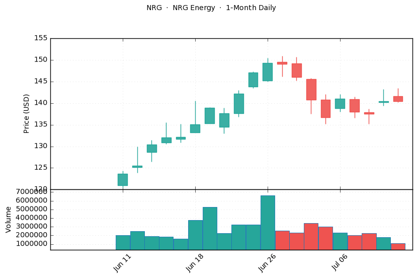
P/E (TTM)154.3
P/E (Fwd)12.1
EPS (TTM)$0.91
EPS (Fwd)$11.57
💡 AI 推薦
NRG Energy 為美國主要發電與能源零售供應商，在德州電力市場具有主導地位。公司正在轉型為清潔能源與儲能整合商，收購 Pivot Energy 擴大太陽能與儲能業務。天然氣發電廠提供穩定現金流，德州極端氣候事件頻繁創造緊急供電商機。
📰 最新新聞（3 天內）
- Dividend Growth 投資策略持續受到關注 — Dividend income often overlooked amid stock market gyrations
- 永續影響力投資持續獲得青睞 — Sustainable Impact Investing gaining traction globally
- NRG ENERGY INC has an Investment Rating of HOLD; a target price of $131.000000; an Industry Subrating of Medium; a Management Subrating of Medium; a Safety Subrating of High; a Financial Strength Subrating of High; a Growth Subrating of Medium; and a Value Subrating of Medium. — NRG ENERGY INC has an Investment Rating of HOLD; a target price of $131.000000; an Industry Subrating of Medium; a Management Subrating of Medium; a Safety Subrating of High; a Financial Strength Subrating of High; a Growth Subrating of Medium; and a Value Subrating of Medium.
NEE
NextEra
$87.96
+0.99%
⚡ AI 電力/能源
📊 半年日 K
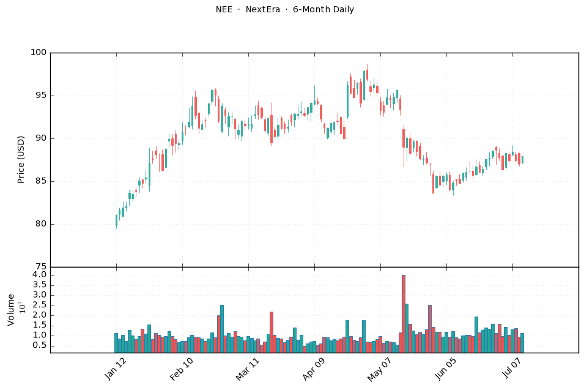
📊 一月日 K（22 交易日）
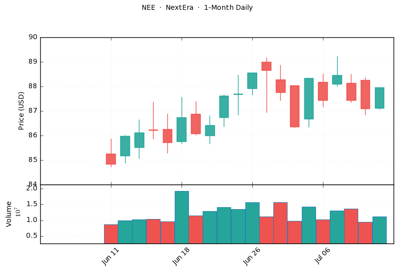
P/E (TTM)22.3
P/E (Fwd)20.0
EPS (TTM)$3.94
EPS (Fwd)$4.40
💡 AI 推薦
NextEra Energy 為全球最大風力與太陽能發電商，在美國清潔能源市場具有無可撼動的領先地位。佛羅里達州的 regulated utility 提供穩定現金流，太陽能與風力發電項目儲備創新高。能源儲存業務整合提供電網穩定性服務。公司的長期合約供電模式提供營收可預測性。
📰 最新新聞（3 天內）
- Dividend Growth 投資策略持續受到關注 — Dividend income often overlooked amid stock market gyrations
- 永續影響力投資持續獲得青睞 — Sustainable Impact Investing gaining traction globally
- Headquartered in Juno Beach, Florida, NextEra Energy provides generation, transmission, and distribution services. It has more than 40 GW of total generating capacity, with about one-third of electricity contributed by renewable wind and solar sources. The company's largest electric utility is Florida Power & Light, FPL, one of the largest vertically integrated electric utilities in the U.S., with approximately 6 million customer accounts. In 2025, revenues topped $27.4 billion with FLP accounting for two-thirds of the top line. Remaining revenues are largely from NEER, a nonregulated subsidiary that is the largest U.S. generator of wind and solar power and a leader in battery storage and renewable infrastructure. Its affiliated entities include NextEra Energy Partners LP, which trades as NEP. NextEra Energy has a generation presence in 38 states and four Canadian provinces and is ahead of many peers in the use of renewable generation, especially wind. The company's fuel mix is heavily weighted toward natural gas, followed by nuclear and wind. Coal accounts for only 2% of overall generation. Through its subsidiaries, NextEra operates seven nuclear generators. The shares are a component of the S&P 500. — Headquartered in Juno Beach, Florida, NextEra Energy provides generation, transmission, and distribution services. It has more than 40 GW of total generating capacity, with about one-third of electricity contributed by renewable wind and solar sources. The company's largest electric utility is Florida Power & Light, FPL, one of the largest vertically integrated electric utilities in the U.S., with approximately 6 million customer accounts. In 2025, revenues topped $27.4 billion with FLP accounting for two-thirds of the top line. Remaining revenues are largely from NEER, a nonregulated subsidiary that is the largest U.S. generator of wind and solar power and a leader in battery storage and renewable infrastructure. Its affiliated entities include NextEra Energy Partners LP, which trades as NEP. NextEra Energy has a generation presence in 38 states and four Canadian provinces and is ahead of many peers in the use of renewable generation, especially wind. The company's fuel mix is heavily weighted toward natural gas, followed by nuclear and wind. Coal accounts for only 2% of overall generation. Through its subsidiaries, NextEra operates seven nuclear generators. The shares are a component of the S&P 500.
AAON
AAON
$114.16
+3.55%
⚡ AI 電力/能源
📊 半年日 K
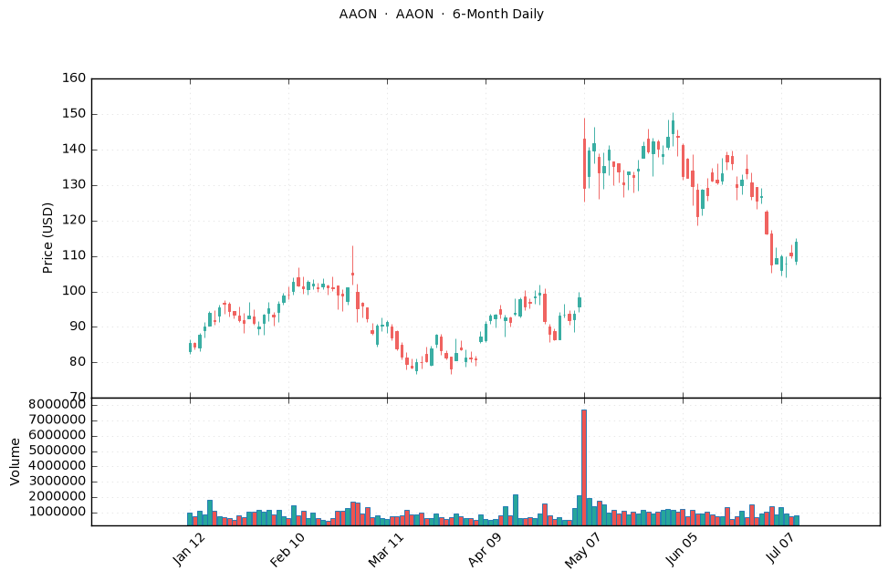
📊 一月日 K（22 交易日）
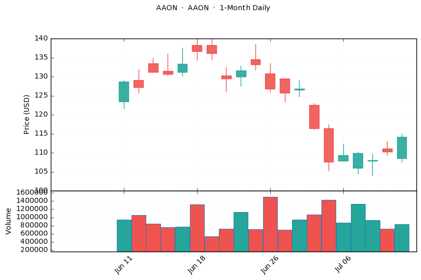
P/E (TTM)80.4
P/E (Fwd)34.7
EPS (TTM)$1.42
EPS (Fwd)$3.29
💡 AI 推薦
— 等待下次報告更新 —
📰 最新新聞（3 天內）
- — 無 3 天內新聞 —
GEV
GEV
$1,091.57
+1.52%
⚡ AI 電力/能源
📊 半年日 K
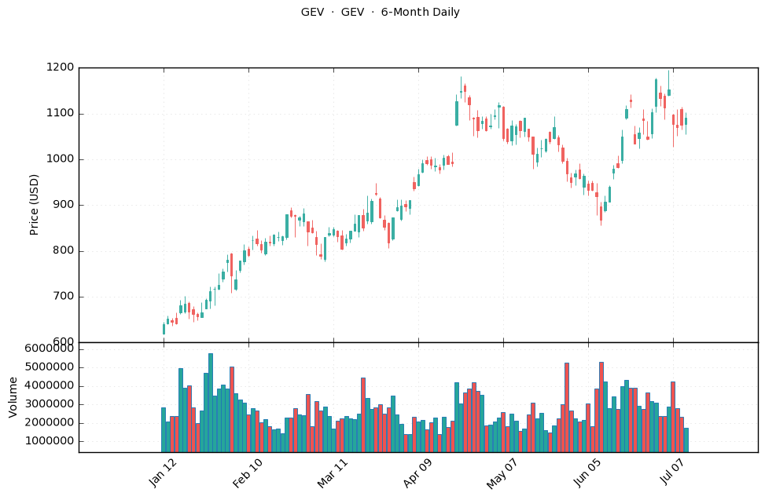
📊 一月日 K（22 交易日）
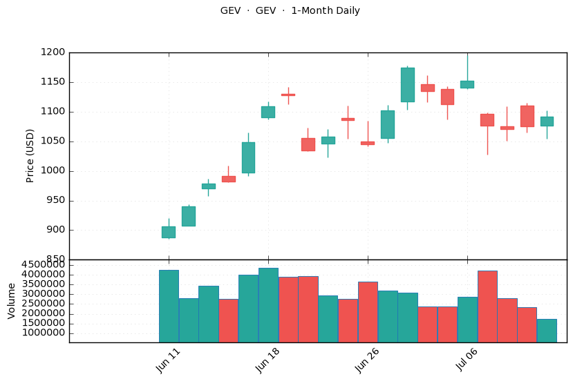
P/E (TTM)31.9
P/E (Fwd)44.4
EPS (TTM)$34.17
EPS (Fwd)$24.60
💡 AI 推薦
GE Vernova 為電力設備與能源基礎建設龍頭，在全球電網升級與脫碳趨勢中具有戰略地位。燃氣渦輪、蒸汽渦輪與風力發電設備需求暢旺，訂單積壓創歷史新高。數位電廠軟體服務快速增長，訂閱制收入佔比提升。AI 資料中心對穩定電力的需求直接帶動公司的發電設備訂單。
📰 最新新聞（3 天內）
- 工業類股正在協助 AI 發展，同時也受惠於 AI — AI helping Industrial sector companies while they support AI growth
- GE Vernova 為全球電力產業領導廠商 — GE Vernova is a global leader in the electric power industry
- The Vickers Top Buyers & Sellers is a daily report that identifies the five companies the largest insider purchase transactions based on the dollar value of the transactions as well as the five companies the largest insider sales transactions based on the dollar value of the transactions. — The Vickers Top Buyers & Sellers is a daily report that identifies the five companies the largest insider purchase transactions based on the dollar value of the transactions as well as the five companies the largest insider sales transactions based on the dollar value of the transactions.
PNRG
PNRG
$177.19
-1.24%
⚡ AI 電力/能源
📊 半年日 K
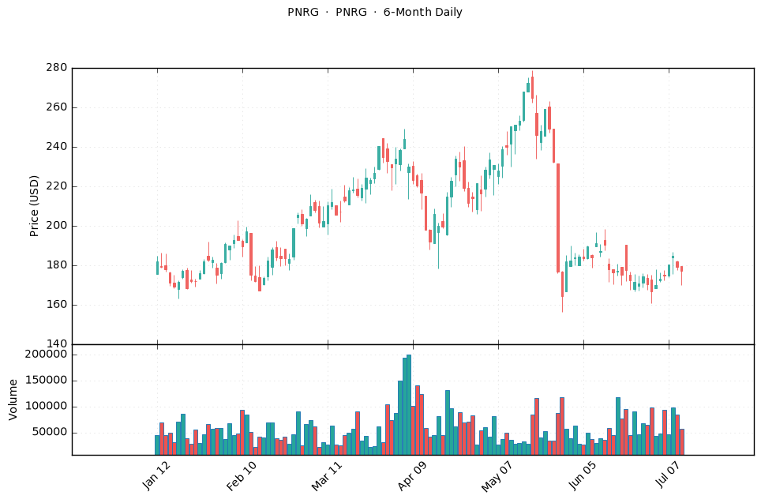
📊 一月日 K（22 交易日）
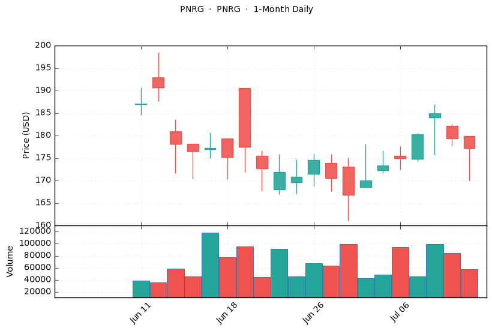
P/E (TTM)19.8
P/E (Fwd)30.4
EPS (TTM)$8.97
EPS (Fwd)$5.82
💡 AI 推薦
— 等待下次報告更新 —
📰 最新新聞（3 天內）
- — 無 3 天內新聞 —
TLN
TLN
$385.80
+0.35%
⚡ AI 電力/能源
📊 半年日 K
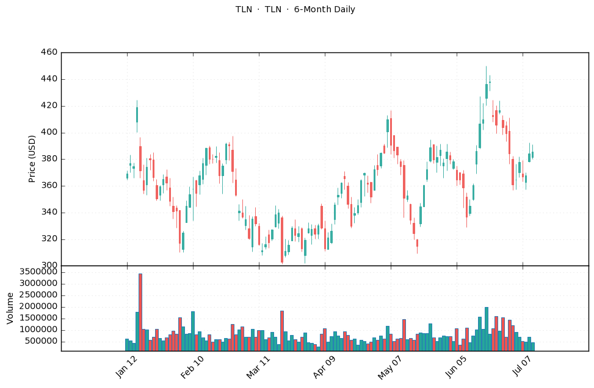
📊 一月日 K（22 交易日）
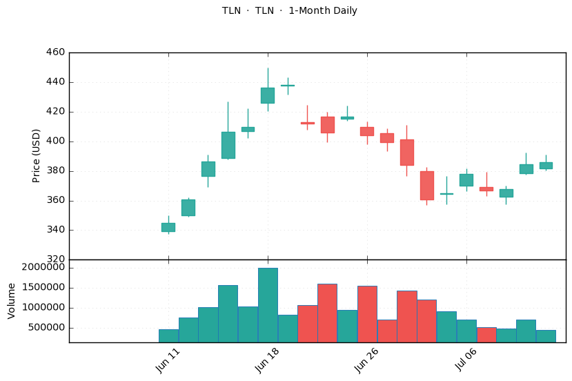
P/E (TTM)—
P/E (Fwd)12.8
EPS (TTM)$-0.50
EPS (Fwd)$30.04
💡 AI 推薦
— 等待下次報告更新 —
📰 最新新聞（3 天內）
- — 無 3 天內新聞 —
📡 AI 網路/光纖 (6)
ANET
Arista
$186.96
+1.23%
📡 AI 網路/光纖
📊 半年日 K
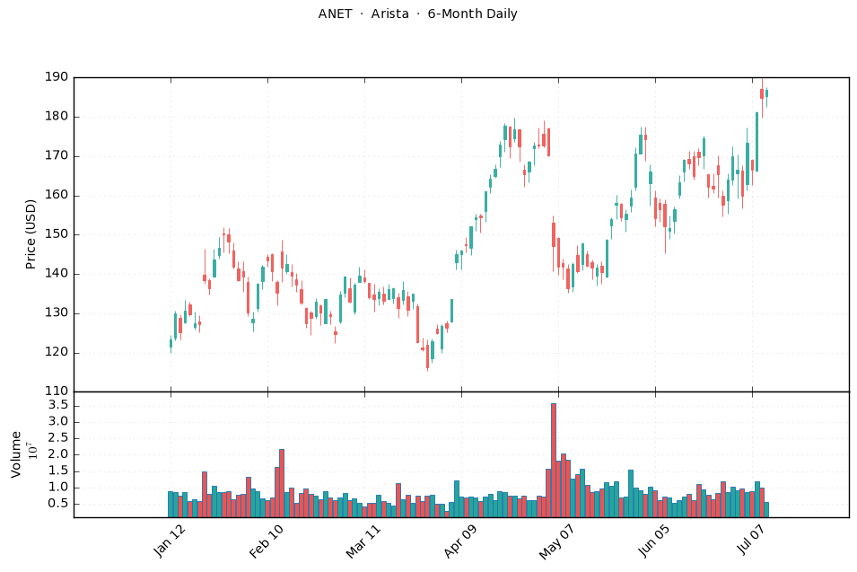
📊 一月日 K（22 交易日）
P/E (TTM)64.0
P/E (Fwd)42.0
EPS (TTM)$2.92
EPS (Fwd)$4.45
💡 AI 推薦
Arista Networks 為雲端網路解決方案領導廠商，受惠於超大規模資料中心對網路交換機的強勁需求。AI 訓練需要大量平行網路流量，Arista 的 EOS 軟體交換機在這個領域具有領先優勢。Meta、Google、微軟等大客戶持續擴大網路基礎建設投資。毛利率維持在高檔水準，現金產生能力強勁。
📰 最新新聞（3 天內）
- Arista Networks 為雲端網路解決方案領先供應商 — Arista Networks is a leading supplier of cloud networking solutions
- 美國創新動能推動經濟持續擴張 — US economy full of innovation driving GDP growth
- The major indices are broadly higher at midday on Wednesday. Oil prices have plunged on optimism that a peace deal with Iran might be close. Crude oil is down 7% at $95 per barrel. The yield on the 10-year note is at 4.36%, and the VIX volatility index is at 17. — The major indices are broadly higher at midday on Wednesday. Oil prices have plunged on optimism that a peace deal with Iran might be close. Crude oil is down 7% at $95 per barrel. The yield on the 10-year note is at 4.36%, and the VIX volatility index is at 17.
CSCO
Cisco
$121.31
+2.54%
📡 AI 網路/光纖
📊 半年日 K
📊 一月日 K（22 交易日）
P/E (TTM)40.4
P/E (Fwd)25.4
EPS (TTM)$3.00
EPS (Fwd)$4.78
💡 AI 推薦
Cisco 為全球網通設備龍頭，正在轉型為軟體與服務导向的商業模式。AI 資料中心對網路基礎建設需求增加，對 Cisco 的交換器與路由器業務有正面幫助。儘管被 Argus Focus List 移除，公司的現金流仍穩健，殖利率具吸引力。併購 Splunk 後的資安整合效應逐步顯現。
📰 最新新聞（3 天內）
- Argus Focus List 本月新增 NVDA、AMAT、CART、LYFT，移除 CSCO — Argus Focus List additions include NVDA, AMAT; deletions include CSCO
- 多家公司在第一季財報季中調升財測 — Companies raising guidance during 1Q26 reporting season
- Cisco is a worldwide leader in communications equipment. Originally created to provide routers and switches for Ethernet-based networks within enterprises, the company has expanded into collaboration, data center, service provider video, security, wireless, analytics, and other hardware and software niches. — Cisco is a worldwide leader in communications equipment. Originally created to provide routers and switches for Ethernet-based networks within enterprises, the company has expanded into collaboration, data center, service provider video, security, wireless, analytics, and other hardware and software niches.
GLW
Corning
$190.89
-0.77%
📡 AI 網路/光纖
📊 半年日 K
📊 一月日 K（22 交易日）
P/E (TTM)91.8
P/E (Fwd)44.7
EPS (TTM)$2.08
EPS (Fwd)$4.27
💡 AI 推薦
Corning 為特殊玻璃與光纖材料龍頭，在光學通訊與資料中心互連具有核心技術。AI 時代對高速光纖傳輸需求爆發，Corning 的光纖與光纜產品直接受惠。汽車領域的 Gorilla Glass 滲透率提升，智慧型手機需求逐步回穩。公司股息穩定，現金流體質健康。
📰 最新新聞（3 天內）
- 永續影響力投資持續獲得青睞 — Sustainable Impact Investing gaining traction globally
- The Vickers Top Buyers & Sellers is a daily report that identifies the five companies the largest insider purchase transactions based on the dollar value of the transactions as well as the five companies the largest insider sales transactions based on the dollar value of the transactions. — The Vickers Top Buyers & Sellers is a daily report that identifies the five companies the largest insider purchase transactions based on the dollar value of the transactions as well as the five companies the largest insider sales transactions based on the dollar value of the transactions.
- The Vickers Top Buyers & Sellers is a daily report that identifies the five companies the largest insider purchase transactions based on the dollar value of the transactions as well as the five companies the largest insider sales transactions based on the dollar value of the transactions. — The Vickers Top Buyers & Sellers is a daily report that identifies the five companies the largest insider purchase transactions based on the dollar value of the transactions as well as the five companies the largest insider sales transactions based on the dollar value of the transactions.
CIEN
Ciena
$460.72
-0.35%
📡 AI 網路/光纖
📊 半年日 K

📊 一月日 K（22 交易日）

P/E (TTM)154.1
P/E (Fwd)47.8
EPS (TTM)$2.99
EPS (Fwd)$9.64
💡 AI 推薦
Ciena 為光學傳輸設備領導廠商，在電信與資料中心互連市場具有重要地位。AI 時代對頻寬需求呈指數增長，高速光學傳輸的需求隨之擴大。5G 建設持續推進與海底光纜升級潮將支持公司營收增長。估值處於歷史區間低端，具修復空間。
📰 最新新聞（3 天內）
- Ciena 參與光學傳輸、交換與匯聚光學乙太網路解決方案 — Ciena participates in optical transport and switching
- 2026 年第一季度強勢股與弱勢股分析 — Top-10 and bottom-five performers from Argus universe in 1Q26
- Stocks turned in a mixed performance on Thursday, as Broadcom led the Nasdaq lower, the S&P 500 and Dow Jones Industrials were higher, and now all of Wall Street has (maybe) moved on and is awaiting the latest jobs data. — Stocks turned in a mixed performance on Thursday, as Broadcom led the Nasdaq lower, the S&P 500 and Dow Jones Industrials were higher, and now all of Wall Street has (maybe) moved on and is awaiting the latest jobs data.
NET
Cloudflare
$268.40
-2.68%
📡 AI 網路/光纖
📊 半年日 K
📊 一月日 K（22 交易日）
P/E (TTM)—
P/E (Fwd)170.0
EPS (TTM)$-0.24
EPS (Fwd)$1.58
💡 AI 推薦
Cloudflare 為全球邊緣運算與資安平台龍頭，AI 時代的流量爆發與資安威脅升級直接帶動需求。Workers AI 平台將 AI 推論能力分散至邊緣節點，降低延遲並提升隱私。公司的高速網路骨幹與分散式架構提供難以複製的競爭壁壘。免費增值模式成功轉化用戶為付費訂戶。
📰 最新新聞（3 天內）
- AI 時代的邊緣運算需求分析 — Edge computing demand in the AI era
- 2026 年第一季度強勢股與弱勢股分析 — Top-10 and bottom-five performers from Argus universe in 1Q26
- The Portfolio Selector features the Argus Focus List, a group of 30 "best idea" stocks generated and regularly updated by Argus' analysts and investment policy committee. It also includes the director of research’s monthly investment strategy column, stock recommendations and sector picks, economic forecasts, and an asset allocation model. This month, the Focus List additions are Delta Air Lines Inc (DAL); Nucor Corp (NUE); Charles Schwab Corp/The (SCHW); Cloudflare Inc (NET) and the Focus List deletions are ASML Holding NV (ASML); Corteva Inc (CTVA); Robinhood Markets Inc (HOOD); RTX Corp (RTX). — The Portfolio Selector features the Argus Focus List, a group of 30 "best idea" stocks generated and regularly updated by Argus' analysts and investment policy committee. It also includes the director of research’s monthly investment strategy column, stock recommendations and sector picks, economic forecasts, and an asset allocation model. This month, the Focus List additions are Delta Air Lines Inc (DAL); Nucor Corp (NUE); Charles Schwab Corp/The (SCHW); Cloudflare Inc (NET) and the Focus List deletions are ASML Holding NV (ASML); Corteva Inc (CTVA); Robinhood Markets Inc (HOOD); RTX Corp (RTX).
LUMN
LUMN
$6.73
-0.30%
📡 AI 網路/光纖
📊 半年日 K
📊 一月日 K（22 交易日）
P/E (TTM)—
P/E (Fwd)-23.1
EPS (TTM)$-1.75
EPS (Fwd)$-0.29
💡 AI 推薦
Lumen Technologies（前稱 CenturyLink）為光纖網路服務商，正在轉型以應對傳統電信營收下滑。公司出售部分資產以削減債務，企業光纖與資料中心互連服務提供穩定現金流。然而在競爭激烈的電信市場中，市佔率流失為結構性挑戰。股價已處於極低水位，具備煙蒂股特質但需要耐心持有。
📰 最新新聞（3 天內）
- AI 時代下的網路基礎建設升級需求分析 — Network infrastructure upgrade needs in the AI era
- LUMEN TECHNOLOGIES INC has an Investment Rating of SELL; a target price of $5.000000; an Industry Subrating of Medium; a Management Subrating of Low; a Safety Subrating of Low; a Financial Strength Subrating of Low; a Growth Subrating of Low; and a Value Subrating of Low. — LUMEN TECHNOLOGIES INC has an Investment Rating of SELL; a target price of $5.000000; an Industry Subrating of Medium; a Management Subrating of Low; a Safety Subrating of Low; a Financial Strength Subrating of Low; a Growth Subrating of Low; and a Value Subrating of Low.
- LUMEN TECHNOLOGIES INC has an Investment Rating of SELL; a target price of $6.000000; an Industry Subrating of Medium; a Management Subrating of Low; a Safety Subrating of Low; a Financial Strength Subrating of Low; a Growth Subrating of Low; and a Value Subrating of Medium. — LUMEN TECHNOLOGIES INC has an Investment Rating of SELL; a target price of $6.000000; an Industry Subrating of Medium; a Management Subrating of Low; a Safety Subrating of Low; a Financial Strength Subrating of Low; a Growth Subrating of Low; and a Value Subrating of Medium.
🖥️ AI 伺服器/雲端 (3)
SMCI
Super Micro
$28.31
+0.25%
🖥️ AI 伺服器/雲端
📊 半年日 K
📊 一月日 K（22 交易日）
P/E (TTM)14.9
P/E (Fwd)8.9
EPS (TTM)$1.90
EPS (Fwd)$3.17
💡 AI 推薦
Super Micro Computer 為 AI 伺服器液冷解決方案先驅，直接受惠於資料中心節能減碳需求。與 NVIDIA 的深度合作關係確保 GPU 伺服器供貨優先權。韓國、台灣與美國的產能擴充正在推進。股價在前期漲多後有所回調，提供新的進場機會。
📰 最新新聞（3 天內）
- AI 時代的資料中心節能需求分析 — Data center energy efficiency needs in the AI era
- 半導體類股在通膨疑慮緩解後出現反彈 — Beaten-up semiconductors led the market comeback
- Stocks are higher at midday on Friday, with a healthy newsflow that includes earnings reports, a non-farm payrolls report that significantly beat expectations, and an update on consumer sentiment that showed consumers are feeling pain at the pump. Indeed, the University of Michigan's survey was at the lowest level on record. — Stocks are higher at midday on Friday, with a healthy newsflow that includes earnings reports, a non-farm payrolls report that significantly beat expectations, and an update on consumer sentiment that showed consumers are feeling pain at the pump. Indeed, the University of Michigan's survey was at the lowest level on record.
DELL
Dell
$434.97
-3.39%
🖥️ AI 伺服器/雲端
📊 半年日 K
📊 一月日 K（22 交易日）
P/E (TTM)34.6
P/E (Fwd)20.2
EPS (TTM)$12.57
EPS (Fwd)$21.50
💡 AI 推薦
Dell 為全球 PC 與伺服器龍頭，在 AI 伺服器需求爆發中具有重要地位。公司的 PowerEdge 伺服器與 AI 基礎建設解決方案持續獲得企業與雲端客戶青睞。PC 市場在庫存調整後已觸底，教育與商用換機潮逐步浮現。VMware 併購後的協同效應持續發酵。
📰 最新新聞（3 天內）
- 2026 下半年投資主題：AI 擴散、能源重整、股息成長 — Six investment themes for the second half of 2026
- Dividend Growth 投資策略持續受到關注 — Dividend income often overlooked amid stock market gyrations
- The Vickers Top Buyers & Sellers is a daily report that identifies the five companies the largest insider purchase transactions based on the dollar value of the transactions as well as the five companies the largest insider sales transactions based on the dollar value of the transactions. — The Vickers Top Buyers & Sellers is a daily report that identifies the five companies the largest insider purchase transactions based on the dollar value of the transactions as well as the five companies the largest insider sales transactions based on the dollar value of the transactions.
HPQ
HPQ
$24.22
+0.37%
🖥️ AI 伺服器/雲端
📊 半年日 K
📊 一月日 K（22 交易日）
P/E (TTM)9.0
P/E (Fwd)8.0
EPS (TTM)$2.70
EPS (Fwd)$3.01
💡 AI 推薦
HP Inc. 為全球 PC 與印表機龍頭，正在經歷 AI PC 換機潮的潛在受益者。Windows 10 終止支援將推動商用 PC 換機需求，AI PC 的額外算力需求加速換機節奏。印表機業務的耗材供應與 MPS 服務提供穩定現金流。公司的印表機專利壁壘與通路優勢仍顯著。
📰 最新新聞（3 天內）
- HP Inc. 為全球 PC 與印表機解決方案領導廠商 — HP Inc. is a leading provider of PCs and printing solutions
- The major indices are modestly higher at midday on Thursday. Negotiations between the U.S. and Iran are back and forth. Meanwhile, fresh inflation data confirmed that prices are rising, as expected, largely due to the war. And, of course, individual names are rising and falling as the final earnings reports hit the tape. Crude oil is at $89 per barrel. The yield on the 10-year note is at 4.46%. The Vis volatility index is at 16. — The major indices are modestly higher at midday on Thursday. Negotiations between the U.S. and Iran are back and forth. Meanwhile, fresh inflation data confirmed that prices are rising, as expected, largely due to the war. And, of course, individual names are rising and falling as the final earnings reports hit the tape. Crude oil is at $89 per barrel. The yield on the 10-year note is at 4.46%. The Vis volatility index is at 16.
- HP Inc. is a leading provider of PCs and printing solutions for businesses, enterprises, and consumers. The company also produces workstations, tablets, retail point-of-sale systems, calculators, and support services. The printing business offers commercial and consumer printers, managed print services, 3D printing, graphics solutions, and ink and other supplies. — HP Inc. is a leading provider of PCs and printing solutions for businesses, enterprises, and consumers. The company also produces workstations, tablets, retail point-of-sale systems, calculators, and support services. The printing business offers commercial and consumer printers, managed print services, 3D printing, graphics solutions, and ink and other supplies.
🔐 AI 資安/雲端 (5)
CRWD
CrowdStrike
$187.18
-5.66%
🔐 AI 資安/雲端
📊 半年日 K
📊 一月日 K（22 交易日）
P/E (TTM)—
P/E (Fwd)119.9
EPS (TTM)$-0.04
EPS (Fwd)$1.56
💡 AI 推薦
CrowdStrike 為雲端資安龍頭，在端點防護市場佔有率持續領先。AI 時代資安威脅升級，企業資安預算持續擴大，公司的 Falcon 平台受惠於此趨勢。訂閱制商業模式具高度可預測性，營收留存率維持高檔。新產品線如 Identity Protection 與 Next-Gen SIEM 滲透率持續提升。
📰 最新新聞（3 天內）
- 第二季市場在四月觸底後強勢反彈 — Stock market ended June in recovery mode after March bottom
- Vickers 內部人交易追蹤報告 — Vickers Top Buyers & Sellers insider trading report
- Thursday looked like a day of indecision until the early afternoon, when President Trump (again) called off strikes on Iran and said the U.S. will soon sign a deal with that country. Markets went ballistic, with crude oil tanking, Treasury bonds ripping, and stocks exploding. After about 40 headlines that a deal was close, the markets responded like the war in the Middle East is over and the Strait of Hormuz is open. — Thursday looked like a day of indecision until the early afternoon, when President Trump (again) called off strikes on Iran and said the U.S. will soon sign a deal with that country. Markets went ballistic, with crude oil tanking, Treasury bonds ripping, and stocks exploding. After about 40 headlines that a deal was close, the markets responded like the war in the Middle East is over and the Strait of Hormuz is open.
PANW
Palo Alto
$325.91
-3.67%
🔐 AI 資安/雲端
📊 半年日 K
📊 一月日 K（22 交易日）
P/E (TTM)285.9
P/E (Fwd)79.1
EPS (TTM)$1.14
EPS (Fwd)$4.12
💡 AI 推薦
Palo Alto Networks 為全球最大資安平台公司，網路安全、雲端資安與 SOC 營收三線並進。AI 驅動的資安威脅升級使企業資安預算持續擴大，Palo Alto 的平台整合策略成功減少客戶資安工具數量。Prisma Cloud 與 Cortex XSIAM 持續獲得大型企業採用。併購戰略整合 CMS 平台，提升交叉銷售效率。
📰 最新新聞（3 天內）
- AI 時代的資安威脅與防護需求分析 — AI-era cybersecurity threats and protection needs analysis
- 2026 年第一季度強勢股與弱勢股分析 — Top-10 and bottom-five performers from Argus universe in 1Q26
- The Vickers Top Buyers & Sellers is a daily report that identifies the five companies the largest insider purchase transactions based on the dollar value of the transactions as well as the five companies the largest insider sales transactions based on the dollar value of the transactions. — The Vickers Top Buyers & Sellers is a daily report that identifies the five companies the largest insider purchase transactions based on the dollar value of the transactions as well as the five companies the largest insider sales transactions based on the dollar value of the transactions.
OKTA
OKTA
$138.63
-6.86%
🔐 AI 資安/雲端
📊 半年日 K
📊 一月日 K（22 交易日）
P/E (TTM)99.7
P/E (Fwd)32.4
EPS (TTM)$1.39
EPS (Fwd)$4.28
💡 AI 推薦
Okta 為全球最大獨立身份管理平台（IAM），在 Zero Trust 資安架構趨勢中具有核心地位。企業數位轉型與遠距辦公常態化推升對身份驗證與存取管理的需求。Okta 與數千個 SaaS 應用的整合深度提供難以複製的網絡效應。訂閱制商業模式，毛利率持續擴張。
📰 最新新聞（3 天內）
- AI 時代的資安威脅與防護需求分析 — AI-era cybersecurity threats and protection needs analysis
- Okta Inc has an Investment Rating of HOLD; a target price of $156.000000; an Industry Subrating of High; a Management Subrating of Medium; a Safety Subrating of Medium; a Financial Strength Subrating of Medium; a Growth Subrating of Medium; and a Value Subrating of High. — Okta Inc has an Investment Rating of HOLD; a target price of $156.000000; an Industry Subrating of High; a Management Subrating of Medium; a Safety Subrating of Medium; a Financial Strength Subrating of Medium; a Growth Subrating of Medium; and a Value Subrating of High.
- Okta Inc has an Investment Rating of HOLD; a target price of $143.000000; an Industry Subrating of High; a Management Subrating of Medium; a Safety Subrating of Medium; a Financial Strength Subrating of Medium; a Growth Subrating of Medium; and a Value Subrating of High. — Okta Inc has an Investment Rating of HOLD; a target price of $143.000000; an Industry Subrating of High; a Management Subrating of Medium; a Safety Subrating of Medium; a Financial Strength Subrating of Medium; a Growth Subrating of Medium; and a Value Subrating of High.
S
S
$17.88
-5.20%
🔐 AI 資安/雲端
📊 半年日 K
📊 一月日 K（22 交易日）
P/E (TTM)—
P/E (Fwd)36.2
EPS (TTM)$-0.97
EPS (Fwd)$0.49
💡 AI 推薦
— 等待下次報告更新 —
📰 最新新聞（3 天內）
- — 無 3 天內新聞 —
ZS
ZS
$139.27
-5.34%
🔐 AI 資安/雲端
📊 半年日 K
📊 一月日 K（22 交易日）
P/E (TTM)—
P/E (Fwd)30.3
EPS (TTM)$-0.47
EPS (Fwd)$4.60
💡 AI 推薦
Zscaler 為全球最大雲端資安平台，Zero Trust Exchange 平台在企業網路安全市場具有領先地位。AI 驅動的資安威脅使傳統 VPN 被 Zero Trust 架構取代，Zscaler 的流量解析與威脅防護能力難以複製。與 Microsoft、SentinelOne 的深度整合增強平台價值。
📰 最新新聞（3 天內）
- AI 時代的 Zero Trust資安架構需求分析 — Zero Trust security architecture needs in the AI era
- The Vickers Top Buyers & Sellers is a daily report that identifies the five companies the largest insider purchase transactions based on the dollar value of the transactions as well as the five companies the largest insider sales transactions based on the dollar value of the transactions. — The Vickers Top Buyers & Sellers is a daily report that identifies the five companies the largest insider purchase transactions based on the dollar value of the transactions as well as the five companies the largest insider sales transactions based on the dollar value of the transactions.
- The Vickers Top Buyers & Sellers is a daily report that identifies the five companies the largest insider purchase transactions based on the dollar value of the transactions as well as the five companies the largest insider sales transactions based on the dollar value of the transactions. — The Vickers Top Buyers & Sellers is a daily report that identifies the five companies the largest insider purchase transactions based on the dollar value of the transactions as well as the five companies the largest insider sales transactions based on the dollar value of the transactions.
🤖 AI 軟體/資料分析 (3)
PLTR
Palantir
$126.79
-1.74%
🤖 AI 軟體/資料分析
📊 半年日 K
📊 一月日 K（22 交易日）
P/E (TTM)142.5
P/E (Fwd)60.5
EPS (TTM)$0.89
EPS (Fwd)$2.09
💡 AI 推薦
Palantir 為大數據分析與 AI 平台龍頭，美國政府國防與情報機構為核心客戶。人工智能平台（AIP）將傳統 Palantir 資料整合能力與 LLM 結合，商業客戶採用加速。政府業務受惠於國防預算擴張，AI 滲透戰場決策已成為剛需。民間製藥與金融服務需求同樣快速增長。
📰 最新新聞（3 天內）
- AI 時代的大數據分析與政府應用需求分析 — AI-era big data analytics and government applications analysis
- Palantir develops and provides software that enables customers from government agencies to commercial enterprises to integrate data for decision-making and operations at scale. The company initially provided its software to the U.S. intelligence services before broadening its customer base. Palantir generates 54% of its revenue from its government segment and 46% from its commercial segment. Some 26% of revenue is generated outside the U.S. Palantir's class A shares trade publicly under the symbol PLTR. Palantir's super-voting class B and class F shares, held by insiders and founders, do not trade publicly. The company is effectively controlled by founders Alexander Karp, Stephen Cohen, and Peter Thiel, through the super-voting class F shares that represent a 49.99% voting interest. Palantir was founded in 2003 and went public at $10 per share on September 30, 2020. — Palantir develops and provides software that enables customers from government agencies to commercial enterprises to integrate data for decision-making and operations at scale. The company initially provided its software to the U.S. intelligence services before broadening its customer base. Palantir generates 54% of its revenue from its government segment and 46% from its commercial segment. Some 26% of revenue is generated outside the U.S. Palantir's class A shares trade publicly under the symbol PLTR. Palantir's super-voting class B and class F shares, held by insiders and founders, do not trade publicly. The company is effectively controlled by founders Alexander Karp, Stephen Cohen, and Peter Thiel, through the super-voting class F shares that represent a 49.99% voting interest. Palantir was founded in 2003 and went public at $10 per share on September 30, 2020.
- A Fragile Truce: Our Monthly Survey of the Economy, Interest Rates, and Stocks April is typically one of the strongest stock months of the year, but performance in April 2026 was off the charts. The 10% April rally in the S&P 500 and 15% rally in the Nasdaq Composite was fueled by the uneasy and fragile, yet still intact, truce between the U.S. and Iran and by the several-times-breached, but still standing, truce between Israel and Hezbollah in Lebanon. Annual gains of 10% on the S&P 500 in a single month are not unheard of, as just since 1980, the S&P 500 recorded 10% plus gains in one month in 2011, 1991, 1987, 1984, and 1982. Going back to 1962, according to Argus' Chartered Market Technician Mark Arbeter, in periods when the index experienced such strong one-month gains and was at or near all-time highs, strong returns have tended to follow in the subsequent 12 months. Twelve months seems like a long way off for a market that is whipsawing daily on news flow from the Iran war. The April rally, like the March sell-off, was headline-driven. But the war was not the only thing happening in April. In the background, U.S. GDP for the first quarter advanced at a solid 2% pace. An already strong earnings season was aided by several huge one-time gains that pushed annual EPS growth to the high-20% range, the strongest in more than five years. As well, the Fed stood pat at its FOMC meeting, while preparing for a momentous leadership shift. The Economy, Interest Rates, and Earnings The advance (first) GPD report for the first quarter of 2026 indicated annualized growth of 2.0%, up from 0.5% in the fourth quarter of 2025. GDP growth in 4Q25 was heavily impacted by the 43-day government shutdown. For the full 2025 year, gross domestic product expanded at a 2.1% rate, down from 2.8% growth in 2024. Although some government functions were shut down or truncated in 1Q26 by the Department of Homeland Security (DHS) funding battle in Congress, the 1Q26 report is a much clearer indicator of the underlying economy than was the 4Q25 report. First-quarter 2026 GDP also captures the effects of one month of the U.S. and Israeli war with Iran. First-quarter 2026 personal consumption expenditures (PCE) increased 1.6%, down from 1.9% in 4Q25. Total spending on goods dipped 0.1% in 1Q26, after rising 0.3% in 4Q25. Durable goods spending was unchanged in 1Q26 from 4Q25 levels, while non-durable goods spending surprised to the downside with a 0.2% decline. The quarter-over-quarter decline in consumer spending on goods reflects the K-shaped economy, in which lower-income consumers have focused spending on necessities. With rising gasoline costs cutting into scarce disposable income, spending on necessities is under further pressure. Services spending, the biggest part of GDP, rose by 2.4% in 1Q26, down from 2.7% in 4Q25. Altogether, consumer spending contributed 1.08 points to 1Q26 GDP, after contributing 1.30 points in 4Q25.Consumer spending on services contributed 1.11 percentage points to 1Q26 GDP, while consumer spending on goods was a slight subtraction from GDP growth. Non-residential fixed investment, the proxy for corporate capital spending, soared by 10.4% in 1Q26, jumping meaningfully from 2.3% growth in 4Q25. The AI boom drove a 17% surge in equipment spending and 13% growth in intellectual property products; corporate spending on structures declined 7%. Non-residential fixed investment contributed 1.39 points to total 1Q26 GDP report. PCE and non-residential fixed investment normally constitute 80%-85% of GDP. These two categories contributed 2.47 percentage points to 1Q26 GDP growth after contributing 1.70 points to 4Q25 GDP growth. Residential investment declined 8.0% in 1Q26, much worse than the 1.7% decline in 4Q25. Residential investment has declined for five consecutive quarters. With the Iran war inflation pushing up interest and mortgage rates, relief is not in sight for this category. Net import-exports and private inventories were volatile in 2025, as companies sought to optimally position their overseas goods flows around the 'Liberation Day' announcements in April and actual tariff implementation in August. For all of 2025, exports rose 1.6% and imports rose 2.7%. The net export-import contribution to 2025 GDP was a negative 22 basis points. The Supreme Court struck down the use of IEEPA for tariffs, and President Trump implemented Section 202 for blanket 10% tariffs. The situation remains confusing for business planners. Exports rose 12.9% in 1Q26 after declining 3.2% in 4Q25. At least some of that growth was in oil exports after the Strait of Hormuz was closed by Iran. But imports jumped an even heartier 21.4% in 1Q26 after contracting 1.0% in 4Q25. The net of exports and imports subtracted 1.30 percentage points from 1Q26 GDP, much higher than the 0.22 points subtracted from 4Q25 GDP growth. Government spending bounced back by 4.4% in 1Q26 from a shutdown-impacted 4Q25, when spending contracted by 5.6%. The recovery in government spending added 0.73 points to 1Q26 GDP growth after subtracting 0.99 points in 4Q25. In broad strokes, the 1Q26 GDP report shows a consumer economy that is struggling with existing and new inflation, but still spending; and a commercial and industrial economy that is all-in on investing in artificial intelligence (AI). Despite the year-long implementation of tariffs at the highest level in decades, imports soared in 1Q26 and were meaningfully subtractive to GDP growth. Argus Chief Economist Chris Graja, CFA, is forecasting 2026 GDP growth of 2.3%. The Argus preliminary GDP forecast for 2027 is for growth of 2.0%. Outside the GDP accounts, the picture is mixed. After multiple years of strength, the U.S. employment economy showed signs of slowing in the third and fourth quarters of 2025. Employment has been better than expected, but erratic, in 2026 to date, with non-farm payrolls missing consensus expectations both to the upside and downside in alternating months. March 2026 non-farm payrolls surprised with a 178,000 gain, or 118,000 ahead of consensus. Altogether, non-farm payrolls averaged a monthly gain of 68,000 for January-March, compared with an average gain of 6,000 for the December-February period. The unemployment rate eased to 4.3% in March from 4.4% in February. Average hourly earnings grew 3.5% annually for March, easing from January (3.7%) and February (3.8%) annual growth. Although artificial intelligence was in development for years and even decades, the AI era in the U.S. economy and stock market started in November 2022 with the general availability of OpenAI's ChatGPT. This first phase of generative AI, beyond the fascination of asking ChatGPT questions, was characterized by training of large language models (LLMs) by hyperscalers building AI data centers with GPU clusters. The next phase of inference-enabling agentic AI is even more compute-intensive and coincides with AI rolling out to enterprise and sovereign customers. No part of the economy is untouched by these development, and the U.S. Industrial sector is helping to build the necessary infrastructure to support this transition. Industrial production fell 0.5% month over month in March after a 0.7% gain in February. Manufacturing ticked down 0.1%. Utilities were down in the 2% range as weather moderated after a bitterly cold January-February period, and mining fell as the war in Iran slowed demand. Industrial production increased 2.4% over the past 12 months, however, including 3.0% annual growth for 1Q26. Capacity utilization receded to a 75.7% rate in March from 76.1% in February. Capacity utilization is more than three percentage points below its long-run (1975-2025) average. Based on pre-war sentiment surveys and diffusion indices, the business community appeared guardedly optimistic while consumers remained worried about affordability and the availability of new jobs. The ISM's manufacturing purchasing managers' index (PMI) remained at 52.7% in April after reaching that level in March. Even with energy prices continuing to climb, April marked four consecutive months for the manufacturing PMI in expansion territory (above 50.0%). ISM's services PMI slipped to 54.0% for March from 56.1% for February, which was the second-highest reading since October 2024. The Conference Board's Consumer Confidence Index moved up to 91.8% in March 2026 from 91.2% in February. The University of Michigan consumer sentiment survey reading was 53.3% in March, down from 55.5% in February and 57.0% in March 2025. Both are down from pre-tariff levels. Actual and diffusion (sentiment) data have started to capture the wartime period. Generally, consumers and companies are wary, but mainly are continuing to go about their business. The situation in Iran has settled into a 'no war, no peace, no oil' phase, with both sides seemingly willing to wait the other side out. If the logjam in the Strait of Hormuz is not resolved, consumers and businesses may feel differently this summer. Even before the war with Iran started, the Fed was in a tough spot trying to honor its dual mandate of keeping the work force fully employed while also holding inflation near its 2% target range. Despite the Fed's nearly four-year battle with inflation, the double-digit shock in energy prices resulting from the war and closure of the Strait of Hormuz has sent market rates of interest higher on fears (now actualized) of renewed inflation. One-third of global fertilizer and predecessor chemicals normally traverse the Strait of Hormuz, and fertilizer is spiking in price. Diesel fuel costs will impact prices for many goods shipped across the U.S. Energy inflation is fully revived, and transport and food inflation are likely soon to follow. West Texas Intermediate (WTI) and Brent crude-oil benchmarks, along with gasoline, diesel fuel, and aviation fuel, all moved 40%-50% higher in the first month of the war. Crude and refined product prices have since bobbed above and below peak levels, based on the market's assessment of the chances for a lasting settlement or even an end to the war. Stasis in which the Strait remains closed is not a healthy condition, given that global stocks of petroleum products are working steadily lower. The Fed recently conducted its April FOMC meeting, and as expected held rates in place. The meeting was far from drama-free, however. Although this was the final meeting for Jerome Powell as Fed chairman, he vowed to stay on as a Fed governor in order to fight what he sees as politically motivated allegations of waste and fraud that he believes are designed to undermine Fed independence. While the Fed held rates steady, the final vote was 8 to 4. That marked a level of dissent not seen in years. One governor (Steven Miron) argued for an immediate rate cut, while three governors sought to remove language stating that further easing was appropriate. Within the 1Q26 GDP report, the PCE price index was 4.5% in the first quarter, up from 2.9% in 4Q25. Even though the core PCE price index strips out energy along with food, core PCE prices rose 4.3% in 1Q26 after rising 2.7% in 4Q25. This metric is monitored by the Fed as part of its rate-setting deliberations, and the 1Q26 rise likely contributed to the dissents on the Fed's messaging at the April FOMC meeting. Signs of inflation are percolating across consumer and business economies. The March all-items consumer price index (CPI) rose by 0.9% on a month-over-month basis and 3.3% on an annual basis. Core CPI for March, excluding food and energy, rose 0.2% monthly and 2.6% annually. The producer price index for March 2026 showed a 0.5% increase from February and a 4.0% increase on an annual basis -- the largest 12-month advance since February 2023. For PPI excluding food, energy and trade services, the 12-month change through March 2026 was 3.6%, a tick higher than 3.5% as of the end of February. With inflation flaring, interest rates jumped in March and remained elevated in April. The 10-year Treasury yield was 4.39% as of the end of April 2026, compared with 4.30% as of the end of March and 4.14% at year-end 2025. The two-year Treasury yield was 3.88% as of the end of April 2026, versus 3.79% as of the end of March and 3.45% as of year-end 2025. The two's-10's slope in the yield curve tightened to 51 basis points at the end of April 2026 from 69 basis points at year-end 2025. The year-end 2025 two's-10's slope was the steepest since 2021, before the Fed started its fight against inflation. The Department of Justice has halted its attempt to charge Jerome Powell for cost overruns incurred in updating the Federal Reserve building, and, as such, North Carolina Senator Tillis withdrew his previous threat to block the transition process. Proposed new Fed Chairman Kevin Warsh appears to be moving closer to appointment. Argus Fixed Income Strategist Kevin Heal continues to model one quarter-point rate cut in the second half of 2026 and one in 2027, but growing inflation might begin to erode that forecast. We are cognizant that the war has created a dynamic situation in which expectations for monetary policy can change rapidly. Conversely, we see a low possibility of a rate hike. First-quarter 2026 earnings have been extraordinary, and we mean that in every sense of the word: 1Q earnings have been exceptionally strong, and we are unlikely to see similarly spectacular growth in any upcoming quarter. Three companies -- Amazon, Alphabet, and Meta Platforms -- experienced huge one-time gains totaling $65 billion in pre-tax income. Many companies also issue and trade on non-GAAP (continuing-operations) results, but these three companies only offer GAAP results. Their huge one-time gains, along with tariff refunds and assorted one-time gains at other firms, contributed in 1Q26 to the strongest annual EPS growth in at least five years. With about two-thirds of companies having reported results for calendar 1Q26, S&P 500 earnings are up 27%-28% year over year, according to the average of the three compiling agencies (Bloomberg, FactSet, and Refinitiv). A week earlier, EPS growth was tracking at an already healthy 15% on a blended basis; the forecast at the end of March was 13%. The blended basis captures both actual numbers for companies that have reported as well as estimates for companies yet to report. Given that consensus estimates reflect conservative guidance from CFOs, actual earnings when fully collected tend to run a few percentage points higher than the blended average at the beginning of EPS season. Of the companies reporting positive earnings growth for the quarter, nearly 85% have reported results that were above consensus expectations. That is meaningfully higher than the long-term range of 75%-80%. The biggest outlier in this earnings season may be the magnitude of the beat against expectations. The 80%-plus of companies that have beaten EPS expectations are on average reporting earnings that are 20% above consensus estimates. The historical beat against expectations is in the 5%-7% range. While those huge one-time gains have contributed to the record EPS surprise, the magnitude of the EPS beat excluding those three big companies was in the 10%-12% range prior to reports from Amazon, Alphabet, and Meta. At the sector level, the best performance is coming from Communication Services. But if you exclude huge one-time gains from various sectors, the best performance is coming from Information Technology. The IT sector overall has below-average fixed costs and higher-than-average revenue per employee, leading to higher-than-average gross and operating margins. Below the operating line, tech companies have relatively lower debt burdens and more globally dispersed (lower) tax bases, meaning more operating income drops to the net income line. These are enduring advantages in any quarter. Including one-time gains from Amazon and Ford, Consumer Discretionary has the third-best EPS growth for the first quarter. Other sectors with strong earnings growth in 1Q26 are benefiting from cyclical forces. Materials earnings are benefiting from weak dollar, which is favorable for commodity pricing, along with strong metals and chemicals demand driven by global data-center buildout. Financial sector earnings are benefiting from higher capital markets activity and favorable net interest margins. According to our model, earnings have grown on a year-over-year basis since mid-2023, typically at a high-single-digit to low-double-digit pace. What has been keeping earnings growing so steadily through geopolitical and macro-economic turbulence? The two-prong answer is revenue growth and margin expansion. From a mid-single-digit rate in recent years, annual revenue growth has accelerated, and for the 1Q26 EPS season sales growth has been averaging just under 10%. Net profit margin is running at least a point above the long-term average of 12.0%-12.5%. Margin expansion partly reflects the best earnings growth coming from high-margined sectors such as Information Technology. All companies across all sectors have been through a lot in recent years: the COVID-19 pandemic, the supply-chain crisis, inflation that at 40-year highs, tariffs, and war and energy shocks. Along the way, companies have learned how to run leaner, source raw materials optimally, and -- wherever possible -- turn fixed costs into variable costs Currently, our forecasts for S&P 500 continuing operations earnings are $315 per share for 2026 and $363 per share for 2027. We have not adjusted our 2026 EPS forecasts to account for those extraordinary one-time gains discussed above. We also have not yet adjusted estimates based on the war with Iran, given the fluid situation in which risks of escalation are balanced by reports of third-party negotiations, or for the surge in AI-related sales and income. Consensus estimates are also fairly stable so far, as investors assess the latest developments. We will be updating our forecasts after the smoke clears on an eventful and extraordinary first-quarter 2026 earnings season. Domestic and Global Markets The performance discussed herein captures the market status as of end of April 2026. The major indices shifted away from growth and toward defensive, cyclical and rate-sensitive in the second half of 2025. That trend intensified in 1Q26 even as the broad market declined across all sectors. But April was another story, as stocks roared back and growth leadership reasserted itself. The S&P 500 rose 10.4% for the month, and the Nasdaq Composite ripped 15.3% higher. One-month 10%-plus gains for the S&P 500 are not unheard of, but they are not common. As of the end of April 2026, the major indices were all up for the year to date in another stunning V-shaped recovery, after all being down for the year at the end of March. The S&P 500 was up 6.0% year to date on a total-return basis including dividends. The Dow Jones Industrial Average was up 3.5% including dividends. The Nasdaq, which in mid-March was on the edge of correction territory, ended April up 8.2%, for an 18-percentage-point one-month swing. Through 2026 to date, value has been beating growth -- but the delta has tightened to about 300 basis points. Small-caps continue to relatively outperform, and the Russell 2000 was up 13.8% at the end of April (the only index up in double-digit percentages). Stock performance has been headline-driven and benefited in April from the truce with Iran. The market may require a lasting end to hostilities before it can really trade on fundamentals. Prices for crude oil, natural gas, and derivatives such as gasoline and aviation fuel soared in March. Although the Strait of Hormuz is still shut down, energy prices have stabilized as the world awaits a settlement in Iran. The Energy sector is still out in front of the broad market and all other sectors, with a 31% gain year to date. But it pulled back nearly 10% in April. Despite the unsettled situation in the Middle East and even with inflation alarm bells ringing, every sector reversed higher in April and all but two finished the month in positive territory. The leader board behind Energy now includes six sectors with double-digit year-to-date gains. In descending order, these are Materials, Industrials, Real Estate, Consumer Staples, Communication Services, and Utilities. Single-digit gainers for the year to date include Information Technology and Consumer Discretionary. Information Technology had the biggest one-month swing, rising just under 20% across April as tech companies reported dazzling AI-infused results. AI growth fundamentals appear to be real and solid, unlike the internet bubble in 2001 or the housing bubble in 2008. Many of the leaders in the AI trade are still substantially more favorably valued than they were a year ago. Consumer Discretionary is getting an overdue bounce from Amazon, but is still up just 2% for the year. Healthcare and Financial are both down in mid-single-digits for 2026 to date. We have always believed that occasional rotation away from growth and toward more diversity in sector leadership is positive for sustaining the health and length of the bull market; but even rotation beneficiaries failed in March. The sharp rotation back to growth in April has helped get a shaky bull steady on its hooves. It also reshaped the sector-weight map. For nine months through 1Q26, rotation away from traditional growth leadership and toward defensive, cyclical, inflation-hedge, and rate-sensitive sectors caused some notable shifts in sector weight. The surge in Information Technology and Communication Services stocks in April 2026 has unwound some but not all of those sector gains. A look at the sector map at the end of April 2026 compared with one year earlier shows the growth leaders coming back bigger than ever. As of the end of April 2026, Information Technology had a 35.0% sector weighting, up 470 basis points from April 2025. The relative shift out of IT actually began in January 2025, when imported semiconductors appeared at risk from triple-digit tariffs (which never materialized). The other big year-over-year gainer is Communication Services, up 170 basis points to 11.0% weight as of the end of April 2026. The income stocks in this sector (VZ, T) finally have rallied, and in April they were joined by the social media giants (META, GOOGL). For all its importance in the current wartime economy, Energy is not a big sector in the U.S. In the past year, Energy has gained 30 basis points (bps) to bring its weighing to 3.5% (below its long-run average in the 4%-10% range). Given that IT and Communication Services together added more than six points of S&P sector weight, most sectors lost weight in the past year. The Financial sector lost 250 basis points in the past year to bring its weighting to 12.0%, and Healthcare lost 230 bps in the past year to bring its weighting to 8.5%. While Financial is within its historical range of 10%-15%, Healthcare is now below its range, also 10%-15%. Consumer Staples lost 130 bps and now clocks in at 4.9%, below its 6%-12% historical range. The 'Little Three' (Utilities, Materials, Real Estate) all lost 10-30 bps in the past year. Growth is back in vogue, for now, and rotation into defensive, rate-sensitive, cyclical, and inflation-hedge sectors is on hiatus. Given that the new trend could persist as AI earnings continue to amaze, we could see further sector weight shifts on a go-forward basis. Global stocks mainly did better than the U.S. market in 2025. The war in Iran has juggled performance to some extent, and the U.S. is in the upper half of our group of international bourses. The U.S. is mainly energy-independent. The same cannot be said for most of the world, including much of Asia and Europe. But most global markets rallied in April amid the fragile truce. At the end of April, seven of nine global bourses in our tally were positive for 2026, with only China and India negative. In terms of our themes, Resources economies are up about 10% year to date. Americas markets are up about 9% in 2026, aided by relative outperformance in Brazil and Canada. Mature economies are up 8.4% year to date. Despite heavy oil dependency, Asian markets are up 1.5% in 2026 to date, while BRICs-minus-Russia countries are up less than 1%. Conclusion Investors have not decided if the April rally represented a meaningful change in direction and sentiment from the March selloff, or a sugar rush soon to be followed by a May headache. The truce appears to be at risk from both sides, given that it is resolving nothing and instead seemingly winding the spring for inevitable future confrontation. Europe and Asia are running out of fuel stocks and are desperate to get the Strait of Hormuz re-opened. Iran is unable to export oil and is running out of places to put it. The U.S. is generating record oil exports, but consumer sentiment is sinking and the midterm elections are approaching. Although stocks were in positive territory exiting April, the U.S. stock market would likely struggle in 2026 if the Strait of Hormuz remains closed, oil prices keep rising, and prices for goods and services move ever higher. We continue to model a positive year for stocks in 2026, while monitoring an ever-more-complex set of circumstances. — A Fragile Truce: Our Monthly Survey of the Economy, Interest Rates, and Stocks April is typically one of the strongest stock months of the year, but performance in April 2026 was off the charts. The 10% April rally in the S&P 500 and 15% rally in the Nasdaq Composite was fueled by the uneasy and fragile, yet still intact, truce between the U.S. and Iran and by the several-times-breached, but still standing, truce between Israel and Hezbollah in Lebanon. Annual gains of 10% on the S&P 500 in a single month are not unheard of, as just since 1980, the S&P 500 recorded 10% plus gains in one month in 2011, 1991, 1987, 1984, and 1982. Going back to 1962, according to Argus' Chartered Market Technician Mark Arbeter, in periods when the index experienced such strong one-month gains and was at or near all-time highs, strong returns have tended to follow in the subsequent 12 months. Twelve months seems like a long way off for a market that is whipsawing daily on news flow from the Iran war. The April rally, like the March sell-off, was headline-driven. But the war was not the only thing happening in April. In the background, U.S. GDP for the first quarter advanced at a solid 2% pace. An already strong earnings season was aided by several huge one-time gains that pushed annual EPS growth to the high-20% range, the strongest in more than five years. As well, the Fed stood pat at its FOMC meeting, while preparing for a momentous leadership shift. The Economy, Interest Rates, and Earnings The advance (first) GPD report for the first quarter of 2026 indicated annualized growth of 2.0%, up from 0.5% in the fourth quarter of 2025. GDP growth in 4Q25 was heavily impacted by the 43-day government shutdown. For the full 2025 year, gross domestic product expanded at a 2.1% rate, down from 2.8% growth in 2024. Although some government functions were shut down or truncated in 1Q26 by the Department of Homeland Security (DHS) funding battle in Congress, the 1Q26 report is a much clearer indicator of the underlying economy than was the 4Q25 report. First-quarter 2026 GDP also captures the effects of one month of the U.S. and Israeli war with Iran. First-quarter 2026 personal consumption expenditures (PCE) increased 1.6%, down from 1.9% in 4Q25. Total spending on goods dipped 0.1% in 1Q26, after rising 0.3% in 4Q25. Durable goods spending was unchanged in 1Q26 from 4Q25 levels, while non-durable goods spending surprised to the downside with a 0.2% decline. The quarter-over-quarter decline in consumer spending on goods reflects the K-shaped economy, in which lower-income consumers have focused spending on necessities. With rising gasoline costs cutting into scarce disposable income, spending on necessities is under further pressure. Services spending, the biggest part of GDP, rose by 2.4% in 1Q26, down from 2.7% in 4Q25. Altogether, consumer spending contributed 1.08 points to 1Q26 GDP, after contributing 1.30 points in 4Q25.Consumer spending on services contributed 1.11 percentage points to 1Q26 GDP, while consumer spending on goods was a slight subtraction from GDP growth. Non-residential fixed investment, the proxy for corporate capital spending, soared by 10.4% in 1Q26, jumping meaningfully from 2.3% growth in 4Q25. The AI boom drove a 17% surge in equipment spending and 13% growth in intellectual property products; corporate spending on structures declined 7%. Non-residential fixed investment contributed 1.39 points to total 1Q26 GDP report. PCE and non-residential fixed investment normally constitute 80%-85% of GDP. These two categories contributed 2.47 percentage points to 1Q26 GDP growth after contributing 1.70 points to 4Q25 GDP growth. Residential investment declined 8.0% in 1Q26, much worse than the 1.7% decline in 4Q25. Residential investment has declined for five consecutive quarters. With the Iran war inflation pushing up interest and mortgage rates, relief is not in sight for this category. Net import-exports and private inventories were volatile in 2025, as companies sought to optimally position their overseas goods flows around the 'Liberation Day' announcements in April and actual tariff implementation in August. For all of 2025, exports rose 1.6% and imports rose 2.7%. The net export-import contribution to 2025 GDP was a negative 22 basis points. The Supreme Court struck down the use of IEEPA for tariffs, and President Trump implemented Section 202 for blanket 10% tariffs. The situation remains confusing for business planners. Exports rose 12.9% in 1Q26 after declining 3.2% in 4Q25. At least some of that growth was in oil exports after the Strait of Hormuz was closed by Iran. But imports jumped an even heartier 21.4% in 1Q26 after contracting 1.0% in 4Q25. The net of exports and imports subtracted 1.30 percentage points from 1Q26 GDP, much higher than the 0.22 points subtracted from 4Q25 GDP growth. Government spending bounced back by 4.4% in 1Q26 from a shutdown-impacted 4Q25, when spending contracted by 5.6%. The recovery in government spending added 0.73 points to 1Q26 GDP growth after subtracting 0.99 points in 4Q25. In broad strokes, the 1Q26 GDP report shows a consumer economy that is struggling with existing and new inflation, but still spending; and a commercial and industrial economy that is all-in on investing in artificial intelligence (AI). Despite the year-long implementation of tariffs at the highest level in decades, imports soared in 1Q26 and were meaningfully subtractive to GDP growth. Argus Chief Economist Chris Graja, CFA, is forecasting 2026 GDP growth of 2.3%. The Argus preliminary GDP forecast for 2027 is for growth of 2.0%. Outside the GDP accounts, the picture is mixed. After multiple years of strength, the U.S. employment economy showed signs of slowing in the third and fourth quarters of 2025. Employment has been better than expected, but erratic, in 2026 to date, with non-farm payrolls missing consensus expectations both to the upside and downside in alternating months. March 2026 non-farm payrolls surprised with a 178,000 gain, or 118,000 ahead of consensus. Altogether, non-farm payrolls averaged a monthly gain of 68,000 for January-March, compared with an average gain of 6,000 for the December-February period. The unemployment rate eased to 4.3% in March from 4.4% in February. Average hourly earnings grew 3.5% annually for March, easing from January (3.7%) and February (3.8%) annual growth. Although artificial intelligence was in development for years and even decades, the AI era in the U.S. economy and stock market started in November 2022 with the general availability of OpenAI's ChatGPT. This first phase of generative AI, beyond the fascination of asking ChatGPT questions, was characterized by training of large language models (LLMs) by hyperscalers building AI data centers with GPU clusters. The next phase of inference-enabling agentic AI is even more compute-intensive and coincides with AI rolling out to enterprise and sovereign customers. No part of the economy is untouched by these development, and the U.S. Industrial sector is helping to build the necessary infrastructure to support this transition. Industrial production fell 0.5% month over month in March after a 0.7% gain in February. Manufacturing ticked down 0.1%. Utilities were down in the 2% range as weather moderated after a bitterly cold January-February period, and mining fell as the war in Iran slowed demand. Industrial production increased 2.4% over the past 12 months, however, including 3.0% annual growth for 1Q26. Capacity utilization receded to a 75.7% rate in March from 76.1% in February. Capacity utilization is more than three percentage points below its long-run (1975-2025) average. Based on pre-war sentiment surveys and diffusion indices, the business community appeared guardedly optimistic while consumers remained worried about affordability and the availability of new jobs. The ISM's manufacturing purchasing managers' index (PMI) remained at 52.7% in April after reaching that level in March. Even with energy prices continuing to climb, April marked four consecutive months for the manufacturing PMI in expansion territory (above 50.0%). ISM's services PMI slipped to 54.0% for March from 56.1% for February, which was the second-highest reading since October 2024. The Conference Board's Consumer Confidence Index moved up to 91.8% in March 2026 from 91.2% in February. The University of Michigan consumer sentiment survey reading was 53.3% in March, down from 55.5% in February and 57.0% in March 2025. Both are down from pre-tariff levels. Actual and diffusion (sentiment) data have started to capture the wartime period. Generally, consumers and companies are wary, but mainly are continuing to go about their business. The situation in Iran has settled into a 'no war, no peace, no oil' phase, with both sides seemingly willing to wait the other side out. If the logjam in the Strait of Hormuz is not resolved, consumers and businesses may feel differently this summer. Even before the war with Iran started, the Fed was in a tough spot trying to honor its dual mandate of keeping the work force fully employed while also holding inflation near its 2% target range. Despite the Fed's nearly four-year battle with inflation, the double-digit shock in energy prices resulting from the war and closure of the Strait of Hormuz has sent market rates of interest higher on fears (now actualized) of renewed inflation. One-third of global fertilizer and predecessor chemicals normally traverse the Strait of Hormuz, and fertilizer is spiking in price. Diesel fuel costs will impact prices for many goods shipped across the U.S. Energy inflation is fully revived, and transport and food inflation are likely soon to follow. West Texas Intermediate (WTI) and Brent crude-oil benchmarks, along with gasoline, diesel fuel, and aviation fuel, all moved 40%-50% higher in the first month of the war. Crude and refined product prices have since bobbed above and below peak levels, based on the market's assessment of the chances for a lasting settlement or even an end to the war. Stasis in which the Strait remains closed is not a healthy condition, given that global stocks of petroleum products are working steadily lower. The Fed recently conducted its April FOMC meeting, and as expected held rates in place. The meeting was far from drama-free, however. Although this was the final meeting for Jerome Powell as Fed chairman, he vowed to stay on as a Fed governor in order to fight what he sees as politically motivated allegations of waste and fraud that he believes are designed to undermine Fed independence. While the Fed held rates steady, the final vote was 8 to 4. That marked a level of dissent not seen in years. One governor (Steven Miron) argued for an immediate rate cut, while three governors sought to remove language stating that further easing was appropriate. Within the 1Q26 GDP report, the PCE price index was 4.5% in the first quarter, up from 2.9% in 4Q25. Even though the core PCE price index strips out energy along with food, core PCE prices rose 4.3% in 1Q26 after rising 2.7% in 4Q25. This metric is monitored by the Fed as part of its rate-setting deliberations, and the 1Q26 rise likely contributed to the dissents on the Fed's messaging at the April FOMC meeting. Signs of inflation are percolating across consumer and business economies. The March all-items consumer price index (CPI) rose by 0.9% on a month-over-month basis and 3.3% on an annual basis. Core CPI for March, excluding food and energy, rose 0.2% monthly and 2.6% annually. The producer price index for March 2026 showed a 0.5% increase from February and a 4.0% increase on an annual basis -- the largest 12-month advance since February 2023. For PPI excluding food, energy and trade services, the 12-month change through March 2026 was 3.6%, a tick higher than 3.5% as of the end of February. With inflation flaring, interest rates jumped in March and remained elevated in April. The 10-year Treasury yield was 4.39% as of the end of April 2026, compared with 4.30% as of the end of March and 4.14% at year-end 2025. The two-year Treasury yield was 3.88% as of the end of April 2026, versus 3.79% as of the end of March and 3.45% as of year-end 2025. The two's-10's slope in the yield curve tightened to 51 basis points at the end of April 2026 from 69 basis points at year-end 2025. The year-end 2025 two's-10's slope was the steepest since 2021, before the Fed started its fight against inflation. The Department of Justice has halted its attempt to charge Jerome Powell for cost overruns incurred in updating the Federal Reserve building, and, as such, North Carolina Senator Tillis withdrew his previous threat to block the transition process. Proposed new Fed Chairman Kevin Warsh appears to be moving closer to appointment. Argus Fixed Income Strategist Kevin Heal continues to model one quarter-point rate cut in the second half of 2026 and one in 2027, but growing inflation might begin to erode that forecast. We are cognizant that the war has created a dynamic situation in which expectations for monetary policy can change rapidly. Conversely, we see a low possibility of a rate hike. First-quarter 2026 earnings have been extraordinary, and we mean that in every sense of the word: 1Q earnings have been exceptionally strong, and we are unlikely to see similarly spectacular growth in any upcoming quarter. Three companies -- Amazon, Alphabet, and Meta Platforms -- experienced huge one-time gains totaling $65 billion in pre-tax income. Many companies also issue and trade on non-GAAP (continuing-operations) results, but these three companies only offer GAAP results. Their huge one-time gains, along with tariff refunds and assorted one-time gains at other firms, contributed in 1Q26 to the strongest annual EPS growth in at least five years. With about two-thirds of companies having reported results for calendar 1Q26, S&P 500 earnings are up 27%-28% year over year, according to the average of the three compiling agencies (Bloomberg, FactSet, and Refinitiv). A week earlier, EPS growth was tracking at an already healthy 15% on a blended basis; the forecast at the end of March was 13%. The blended basis captures both actual numbers for companies that have reported as well as estimates for companies yet to report. Given that consensus estimates reflect conservative guidance from CFOs, actual earnings when fully collected tend to run a few percentage points higher than the blended average at the beginning of EPS season. Of the companies reporting positive earnings growth for the quarter, nearly 85% have reported results that were above consensus expectations. That is meaningfully higher than the long-term range of 75%-80%. The biggest outlier in this earnings season may be the magnitude of the beat against expectations. The 80%-plus of companies that have beaten EPS expectations are on average reporting earnings that are 20% above consensus estimates. The historical beat against expectations is in the 5%-7% range. While those huge one-time gains have contributed to the record EPS surprise, the magnitude of the EPS beat excluding those three big companies was in the 10%-12% range prior to reports from Amazon, Alphabet, and Meta. At the sector level, the best performance is coming from Communication Services. But if you exclude huge one-time gains from various sectors, the best performance is coming from Information Technology. The IT sector overall has below-average fixed costs and higher-than-average revenue per employee, leading to higher-than-average gross and operating margins. Below the operating line, tech companies have relatively lower debt burdens and more globally dispersed (lower) tax bases, meaning more operating income drops to the net income line. These are enduring advantages in any quarter. Including one-time gains from Amazon and Ford, Consumer Discretionary has the third-best EPS growth for the first quarter. Other sectors with strong earnings growth in 1Q26 are benefiting from cyclical forces. Materials earnings are benefiting from weak dollar, which is favorable for commodity pricing, along with strong metals and chemicals demand driven by global data-center buildout. Financial sector earnings are benefiting from higher capital markets activity and favorable net interest margins. According to our model, earnings have grown on a year-over-year basis since mid-2023, typically at a high-single-digit to low-double-digit pace. What has been keeping earnings growing so steadily through geopolitical and macro-economic turbulence? The two-prong answer is revenue growth and margin expansion. From a mid-single-digit rate in recent years, annual revenue growth has accelerated, and for the 1Q26 EPS season sales growth has been averaging just under 10%. Net profit margin is running at least a point above the long-term average of 12.0%-12.5%. Margin expansion partly reflects the best earnings growth coming from high-margined sectors such as Information Technology. All companies across all sectors have been through a lot in recent years: the COVID-19 pandemic, the supply-chain crisis, inflation that at 40-year highs, tariffs, and war and energy shocks. Along the way, companies have learned how to run leaner, source raw materials optimally, and -- wherever possible -- turn fixed costs into variable costs Currently, our forecasts for S&P 500 continuing operations earnings are $315 per share for 2026 and $363 per share for 2027. We have not adjusted our 2026 EPS forecasts to account for those extraordinary one-time gains discussed above. We also have not yet adjusted estimates based on the war with Iran, given the fluid situation in which risks of escalation are balanced by reports of third-party negotiations, or for the surge in AI-related sales and income. Consensus estimates are also fairly stable so far, as investors assess the latest developments. We will be updating our forecasts after the smoke clears on an eventful and extraordinary first-quarter 2026 earnings season. Domestic and Global Markets The performance discussed herein captures the market status as of end of April 2026. The major indices shifted away from growth and toward defensive, cyclical and rate-sensitive in the second half of 2025. That trend intensified in 1Q26 even as the broad market declined across all sectors. But April was another story, as stocks roared back and growth leadership reasserted itself. The S&P 500 rose 10.4% for the month, and the Nasdaq Composite ripped 15.3% higher. One-month 10%-plus gains for the S&P 500 are not unheard of, but they are not common. As of the end of April 2026, the major indices were all up for the year to date in another stunning V-shaped recovery, after all being down for the year at the end of March. The S&P 500 was up 6.0% year to date on a total-return basis including dividends. The Dow Jones Industrial Average was up 3.5% including dividends. The Nasdaq, which in mid-March was on the edge of correction territory, ended April up 8.2%, for an 18-percentage-point one-month swing. Through 2026 to date, value has been beating growth -- but the delta has tightened to about 300 basis points. Small-caps continue to relatively outperform, and the Russell 2000 was up 13.8% at the end of April (the only index up in double-digit percentages). Stock performance has been headline-driven and benefited in April from the truce with Iran. The market may require a lasting end to hostilities before it can really trade on fundamentals. Prices for crude oil, natural gas, and derivatives such as gasoline and aviation fuel soared in March. Although the Strait of Hormuz is still shut down, energy prices have stabilized as the world awaits a settlement in Iran. The Energy sector is still out in front of the broad market and all other sectors, with a 31% gain year to date. But it pulled back nearly 10% in April. Despite the unsettled situation in the Middle East and even with inflation alarm bells ringing, every sector reversed higher in April and all but two finished the month in positive territory. The leader board behind Energy now includes six sectors with double-digit year-to-date gains. In descending order, these are Materials, Industrials, Real Estate, Consumer Staples, Communication Services, and Utilities. Single-digit gainers for the year to date include Information Technology and Consumer Discretionary. Information Technology had the biggest one-month swing, rising just under 20% across April as tech companies reported dazzling AI-infused results. AI growth fundamentals appear to be real and solid, unlike the internet bubble in 2001 or the housing bubble in 2008. Many of the leaders in the AI trade are still substantially more favorably valued than they were a year ago. Consumer Discretionary is getting an overdue bounce from Amazon, but is still up just 2% for the year. Healthcare and Financial are both down in mid-single-digits for 2026 to date. We have always believed that occasional rotation away from growth and toward more diversity in sector leadership is positive for sustaining the health and length of the bull market; but even rotation beneficiaries failed in March. The sharp rotation back to growth in April has helped get a shaky bull steady on its hooves. It also reshaped the sector-weight map. For nine months through 1Q26, rotation away from traditional growth leadership and toward defensive, cyclical, inflation-hedge, and rate-sensitive sectors caused some notable shifts in sector weight. The surge in Information Technology and Communication Services stocks in April 2026 has unwound some but not all of those sector gains. A look at the sector map at the end of April 2026 compared with one year earlier shows the growth leaders coming back bigger than ever. As of the end of April 2026, Information Technology had a 35.0% sector weighting, up 470 basis points from April 2025. The relative shift out of IT actually began in January 2025, when imported semiconductors appeared at risk from triple-digit tariffs (which never materialized). The other big year-over-year gainer is Communication Services, up 170 basis points to 11.0% weight as of the end of April 2026. The income stocks in this sector (VZ, T) finally have rallied, and in April they were joined by the social media giants (META, GOOGL). For all its importance in the current wartime economy, Energy is not a big sector in the U.S. In the past year, Energy has gained 30 basis points (bps) to bring its weighing to 3.5% (below its long-run average in the 4%-10% range). Given that IT and Communication Services together added more than six points of S&P sector weight, most sectors lost weight in the past year. The Financial sector lost 250 basis points in the past year to bring its weighting to 12.0%, and Healthcare lost 230 bps in the past year to bring its weighting to 8.5%. While Financial is within its historical range of 10%-15%, Healthcare is now below its range, also 10%-15%. Consumer Staples lost 130 bps and now clocks in at 4.9%, below its 6%-12% historical range. The 'Little Three' (Utilities, Materials, Real Estate) all lost 10-30 bps in the past year. Growth is back in vogue, for now, and rotation into defensive, rate-sensitive, cyclical, and inflation-hedge sectors is on hiatus. Given that the new trend could persist as AI earnings continue to amaze, we could see further sector weight shifts on a go-forward basis. Global stocks mainly did better than the U.S. market in 2025. The war in Iran has juggled performance to some extent, and the U.S. is in the upper half of our group of international bourses. The U.S. is mainly energy-independent. The same cannot be said for most of the world, including much of Asia and Europe. But most global markets rallied in April amid the fragile truce. At the end of April, seven of nine global bourses in our tally were positive for 2026, with only China and India negative. In terms of our themes, Resources economies are up about 10% year to date. Americas markets are up about 9% in 2026, aided by relative outperformance in Brazil and Canada. Mature economies are up 8.4% year to date. Despite heavy oil dependency, Asian markets are up 1.5% in 2026 to date, while BRICs-minus-Russia countries are up less than 1%. Conclusion Investors have not decided if the April rally represented a meaningful change in direction and sentiment from the March selloff, or a sugar rush soon to be followed by a May headache. The truce appears to be at risk from both sides, given that it is resolving nothing and instead seemingly winding the spring for inevitable future confrontation. Europe and Asia are running out of fuel stocks and are desperate to get the Strait of Hormuz re-opened. Iran is unable to export oil and is running out of places to put it. The U.S. is generating record oil exports, but consumer sentiment is sinking and the midterm elections are approaching. Although stocks were in positive territory exiting April, the U.S. stock market would likely struggle in 2026 if the Strait of Hormuz remains closed, oil prices keep rising, and prices for goods and services move ever higher. We continue to model a positive year for stocks in 2026, while monitoring an ever-more-complex set of circumstances.
CRM
CRM
$163.32
+0.50%
🤖 AI 軟體/資料分析
📊 半年日 K
📊 一月日 K（22 交易日）
P/E (TTM)18.9
P/E (Fwd)10.5
EPS (TTM)$8.62
EPS (Fwd)$15.51
💡 AI 推薦
— 等待下次報告更新 —
📰 最新新聞（3 天內）
- — 無 3 天內新聞 —
SNOW
SNOW
$261.45
-2.26%
🤖 AI 軟體/資料分析
📊 半年日 K
📊 一月日 K（22 交易日）
P/E (TTM)—
P/E (Fwd)97.3
EPS (TTM)$-3.53
EPS (Fwd)$2.69
💡 AI 推薦
Snowflake 為企業資料雲端平台龍頭，在資料倉儲與湖倉一體（Data Lakehouse）市場具有領先地位。AI/ML 工作負載迁移至雲端為長期結構性趨勢，Snowflake 的 Cortex AI 功能整合 LLM 降低企業使用 AI 門檻。資料交易市集（Marketplace）貨幣化潛力尚未被市場充分定價。
📰 最新新聞（3 天內）
- AI 時代的企業資料平台需求分析 — Enterprise data platform needs in the AI era
- The Vickers Top Buyers & Sellers is a daily report that identifies the five companies the largest insider purchase transactions based on the dollar value of the transactions as well as the five companies the largest insider sales transactions based on the dollar value of the transactions. — The Vickers Top Buyers & Sellers is a daily report that identifies the five companies the largest insider purchase transactions based on the dollar value of the transactions as well as the five companies the largest insider sales transactions based on the dollar value of the transactions.
- The first-quarter earnings season has been sensational. Many companies knocked it out of the park when delivering earnings and revenue numbers that well beyond expectations. With reports now in from about 96% of S&P 500 companies, earnings have climbed a staggering 29% from last quarter. Information Technology, up 56%, and Communication Services, up 51%, have led the pack. At the bottom are Healthcare, down 3%, and Energy, down 1%. With earnings season essentially over, we have had a chance to look at trends. In particular, we watch for companies that raised guidance as we view that action as a likely catalyst for market-beating returns in the quarters ahead. It's even harder for companies to raise guidance during uncertain economic times, as vision is murky. The following is a partial list of companies in Argus' Fundamental Universe of Coverage where management raised its outlook during the 1Q26 reporting season. — The first-quarter earnings season has been sensational. Many companies knocked it out of the park when delivering earnings and revenue numbers that well beyond expectations. With reports now in from about 96% of S&P 500 companies, earnings have climbed a staggering 29% from last quarter. Information Technology, up 56%, and Communication Services, up 51%, have led the pack. At the bottom are Healthcare, down 3%, and Energy, down 1%. With earnings season essentially over, we have had a chance to look at trends. In particular, we watch for companies that raised guidance as we view that action as a likely catalyst for market-beating returns in the quarters ahead. It's even harder for companies to raise guidance during uncertain economic times, as vision is murky. The following is a partial list of companies in Argus' Fundamental Universe of Coverage where management raised its outlook during the 1Q26 reporting season.
☁️ AI 雲端平台 (5)
ORCL
Oracle
$140.64
-2.14%
☁️ AI 雲端平台
📊 半年日 K
📊 一月日 K（22 交易日）
P/E (TTM)24.1
P/E (Fwd)12.9
EPS (TTM)$5.84
EPS (Fwd)$10.92
💡 AI 推薦
— 等待下次報告更新 —
📰 最新新聞（3 天內）
- — 無 3 天內新聞 —
GOOGL
Alphabet
$357.18
-0.48%
☁️ AI 雲端平台
📊 半年日 K
📊 一月日 K（22 交易日）
P/E (TTM)27.2
P/E (Fwd)24.5
EPS (TTM)$13.11
EPS (Fwd)$14.57
💡 AI 推薦
Alphabet 為全球最大數位廣告平台，Google Search 與 YouTube 的貨幣化能力持續增強。AI 整合進入 Search 提升用戶體驗，廣告點擊率與單次點擊成本同步提升。雲端業務 Google Cloud 加速追上 AWS 與 Azure，AI 平台 Vertex 與 Gemini API 企業採用率快速上升。自動駕駛 Waymo 商業化進度良好。
📰 最新新聞（3 天內）
- Alphabet 為全球最大線上搜尋與廣告平台 — Alphabet maintains the largest online index of websites accessible through automated search
- 永續成長主題投資組合更新 — Argus Sustainable Growth Theme Model Portfolio updated
- Last week was a sloppy four-day affair for the stock market, as the mega cap indices continue their sideways trek since peaking at all-time highs on June 2. The S&P 500 rose 1.8%, the Nasdaq was up 2%, the Nasdaq 100 gained 0.7%, the S&P MidCap 400 fell 0.2%, and the S&P Small Cap 600 lost 0.9%. The S&P 100 was up 2.3%, the Invesco SPX Top 50 (XLG) tacked on 2.4%, and the iShares Top 20 ETF (TOPT) added 2.6%. — Last week was a sloppy four-day affair for the stock market, as the mega cap indices continue their sideways trek since peaking at all-time highs on June 2. The S&P 500 rose 1.8%, the Nasdaq was up 2%, the Nasdaq 100 gained 0.7%, the S&P MidCap 400 fell 0.2%, and the S&P Small Cap 600 lost 0.9%. The S&P 100 was up 2.3%, the Invesco SPX Top 50 (XLG) tacked on 2.4%, and the iShares Top 20 ETF (TOPT) added 2.6%.
MSFT
Microsoft
$385.10
+0.19%
☁️ AI 雲端平台
📊 半年日 K
📊 一月日 K（22 交易日）
P/E (TTM)22.9
P/E (Fwd)19.9
EPS (TTM)$16.79
EPS (Fwd)$19.36
💡 AI 推薦
Microsoft 為全球雲端運算與企業軟體龍頭，Azure 在 AI 時代具有戰略地位。Copilot AI 助手全線整合進 Office 365、Dynamics 365 與 Azure 平台，企業採用率快速上升。 Gaming 業務（Xbox + Activision）提供額外成長引擎，雲端遊戲服務持續擴張。智慧財產授權模式具高度規模效應。
📰 最新新聞（3 天內）
- AI 正在提升消費品公司利潤率 — AI is helping lift profits at consumer companies
- 2026 下半年投資主題：AI 擴散、能源重整、股息成長 — Six investment themes for the second half of 2026
- Microsoft is the world's largest independent software developer. The company was founded on the MS Windows operating system and MS Office business applications suite for PCs. As it has grown, Microsoft has expanded into enterprise software with Windows Server, SQL Server, Dynamics CRM, SharePoint, Azure, and Lync; hardware with the Xbox gaming/media platform and the Surface tablet; and online services through Bing. More than 50% of revenue is generated outside the U.S. — Microsoft is the world's largest independent software developer. The company was founded on the MS Windows operating system and MS Office business applications suite for PCs. As it has grown, Microsoft has expanded into enterprise software with Windows Server, SQL Server, Dynamics CRM, SharePoint, Azure, and Lync; hardware with the Xbox gaming/media platform and the Surface tablet; and online services through Bing. More than 50% of revenue is generated outside the U.S.
AMZN
Amazon
$245.34
-0.69%
☁️ AI 雲端平台
📊 半年日 K
📊 一月日 K（22 交易日）
P/E (TTM)29.3
P/E (Fwd)24.8
EPS (TTM)$8.37
EPS (Fwd)$9.89
💡 AI 推薦
亞馬遜為雲端運算與電商雙龍頭，AWS 在 AI 時代的基礎建設需求中處於有利位置。AWS 推出多款自研 AI 晶片（Trainium、Inferentia）降低對 NVIDIA 的依賴，提升利潤率。電商業務受惠於 AI 推薦系統與物流自動化，廣告收入快速增長。AWS 持續奪取競爭對手市場份額，整體成長動能強勁。
📰 最新新聞（3 天內）
- AI 正在提升消費品公司利潤率 — AI is helping lift profits at consumer companies
- 永續影響力投資持續獲得青睞 — Sustainable Impact Investing gaining traction globally
- 機構投資者與 Activist 投資趨勢分析 — Activist investors' 13F filings reveal core holdings
META
Meta
$669.21
+5.97%
☁️ AI 雲端平台
📊 半年日 K
📊 一月日 K（22 交易日）
P/E (TTM)24.3
P/E (Fwd)18.4
EPS (TTM)$27.50
EPS (Fwd)$36.33
💡 AI 推薦
Meta Platforms 為全球最大社群媒體與數位廣告平台，AI 整合大幅提升廣告效益。Reels 短影片貨幣化持續改善，廣告投放在 AI 優化後的轉換率顯著提升。元宇宙策略調整後，Reality Labs 虧損可控，核心廣告業務維持高速增長。Instagram Threads 用戶數突破3億，貨幣化潛力待釋放。
📰 最新新聞（3 天內）
- AI 正在提升消費品公司利潤率 — AI is helping lift profits at consumer companies
- 2026 年第一季度強勢股與弱勢股分析 — Top-10 and bottom-five performers from Argus universe in 1Q26
- Elon Musk's SpaceX helped revive the IPO market in 2Q26 -- and may set the stage for a healthy second half of the year. Led by SpaceX, a total of 48 companies completed initial public offerings in 2Q26, up 45% compared to 33 in the first quarter, despite rising inflation and higher energy prices due to the conflict with Iran. Total capital raised was well above both the sequential and year-over-year period, even when excluding SpaceX. In total, 2Q26 IPOs raised $105 billion, compared with $10 billion in 1Q26 and only $7 billion in 2Q25. While $75 billion of this came from SpaceX alone, the remaining group still raised $30 billion. The quarter featured 10 IPOs that each raised $1 billion or more, which had not happened since 4Q21. Most investor attention in the quarter was rightfully on SpaceX, as several notable trends emerged from the offering that could have implications for other planned mega-cap offerings in the coming months. These trends included rapid index adoption of new stocks, eased lock-up restrictions, and an IPO price set by the company, not the banks. In addition, SpaceX initially planned to allocate as much as 30% of the offering to retail investors, much higher than historical levels that are closer to 10%. Though this ultimately was scaled back to approximately 20% amid high institutional and index demand, what is likely the largest retail investors group in history has now been taken on the SPCX ride -- at first up 50% from the price at the open to a high of $225, and now back down 33% to the $155 range. — Elon Musk's SpaceX helped revive the IPO market in 2Q26 -- and may set the stage for a healthy second half of the year. Led by SpaceX, a total of 48 companies completed initial public offerings in 2Q26, up 45% compared to 33 in the first quarter, despite rising inflation and higher energy prices due to the conflict with Iran. Total capital raised was well above both the sequential and year-over-year period, even when excluding SpaceX. In total, 2Q26 IPOs raised $105 billion, compared with $10 billion in 1Q26 and only $7 billion in 2Q25. While $75 billion of this came from SpaceX alone, the remaining group still raised $30 billion. The quarter featured 10 IPOs that each raised $1 billion or more, which had not happened since 4Q21. Most investor attention in the quarter was rightfully on SpaceX, as several notable trends emerged from the offering that could have implications for other planned mega-cap offerings in the coming months. These trends included rapid index adoption of new stocks, eased lock-up restrictions, and an IPO price set by the company, not the banks. In addition, SpaceX initially planned to allocate as much as 30% of the offering to retail investors, much higher than historical levels that are closer to 10%. Though this ultimately was scaled back to approximately 20% amid high institutional and index demand, what is likely the largest retail investors group in history has now been taken on the SPCX ride -- at first up 50% from the price at the open to a high of $225, and now back down 33% to the $155 range.
🏭 AI 基礎建設其他 (2)
AES
AES
$14.78
+0.34%
🏭 AI 基礎建設其他
📊 半年日 K

📊 一月日 K（22 交易日）

P/E (TTM)7.7
P/E (Fwd)6.2
EPS (TTM)$1.92
EPS (Fwd)$2.38
💡 AI 推薦
— 等待下次報告更新 —
📰 最新新聞（3 天內）
- — 無 3 天內新聞 —
ASML
ASML
$1,797.32
-0.38%
🏭 AI 基礎建設其他
📊 半年日 K
📊 一月日 K（22 交易日）
P/E (TTM)61.0
P/E (Fwd)35.9
EPS (TTM)$29.48
EPS (Fwd)$50.06
💡 AI 推薦
— 等待下次報告更新 —
📰 最新新聞（3 天內）
- — 無 3 天內新聞 —
📊 自動產生於 2026-07-13 05:33 UTC
資料來源：Yahoo Finance · 原始碼 github.com/acstep/stock-charts · AI 報告來自 stock-reports
資料來源：Yahoo Finance · 原始碼 github.com/acstep/stock-charts · AI 報告來自 stock-reports